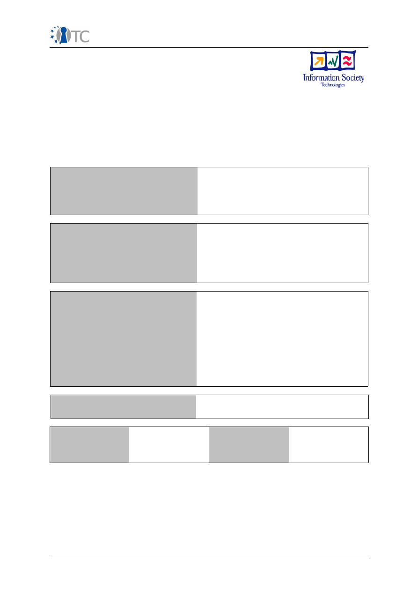
Publishable Activity Report OpenTC
D01.6 Final Reports (M01-M42)
Publishable Activity Report
Project number
IST-027635
Project acronym
Open_TC
Project title
Open Trusted Computing
Deliverable type
Report
Deliverable reference number
IST-027635/D01.6/1.1
Deliverable title
Publishable Activity Report
WP contributing to the deliverable
WP01
Due date
April 2009 - M42
Actual submission date
June 3
rd
, 2009
Responsible Organisation
TEC
Authors
TEC, HP with contribution of all partners
Abstract
This report gives a publishable summary of all
activities performed by each partner for the
full project duration.
Keywords
OpenTC, objectives, activities, presentations,
budget, management, results
Dissemination level
Public
Revision
1.2
Instrument
IP
Start date of the
project
1
st
November 2005
Thematic
Priority
IST
Duration
42 months
OpenTC Publishable Activity Report
1/40

Publishable Activity Report OpenTC
Table of Contents
Table of Contents
1 Introduction and Overview..................................................................................................................3
1.1 The Development of the OpenTC Framework ............................................................................4
1.1.1 Phase 1 (M01-M12)..............................................................................................................4
1.1.2 Phase 2 (M13-M24)..............................................................................................................5
1.1.3 Phase 3 (M25-M42)..............................................................................................................5
1.2 Dissemination of Knowledge and Results....................................................................................7
1.3 Exploitation of Final Results.........................................................................................................7
1.4 Future Directions.........................................................................................................................8
1.5 Open Trusted Computing Partners..............................................................................................8
1.6 OTC Logo..................................................................................................................................10
1.7 OTC Disclaimer.........................................................................................................................10
2 Project Execution .............................................................................................................................11
2.1 WP02: Requirements Definition and Specifications...................................................................11
2.1.1 Progress towards objectives...............................................................................................11
2.1.2 Major Achievements...........................................................................................................12
2.2 WP03: Basic Interfaces and Trust Layers..................................................................................13
2.2.1 Progress towards Objectives..............................................................................................13
2.2.2 Major Achievements...........................................................................................................14
2.3 WP04: Trusted OS Development...............................................................................................14
2.3.1 Progress Towards Objectives.............................................................................................14
2.3.2 Major Achievements...........................................................................................................15
2.4 WP05: Security Management and Infrastructure.......................................................................16
2.4.1 Progress Towards Objectives.............................................................................................17
2.4.2 Major Achievements ..........................................................................................................19
2.5 WP06 Use Examples / Prototype Applications for Proof-of-Concept ........................................19
2.5.1 SWP6a: Digital Rights Management...................................................................................20
2.5.2 SWP6b: Message Exchange Infrastructure........................................................................20
2.5.3 SWP 6c: Electronic Signature Application Prototype..........................................................21
2.5.4 SWP6d Encrypted File Service...........................................................................................23
2.5.5 WP6e: Multi-Factor Authentication......................................................................................23
2.6 WP07: Development Support, Quality, Evaluation and Certification Description.......................24
2.6.1 Progress Towards Objectives.............................................................................................25
2.6.2 Major Achievements...........................................................................................................26
2.7 WP 08: Trusted Computing for embedded controllers and mobile phones................................26
2.7.1 Progress towards objectives...............................................................................................27
2.7.2 Major Achievements:..........................................................................................................28
2.8 WP09: Distribution of Trusted Linux Platform and Modules.......................................................28
2.8.1 Progress towards Objectives..............................................................................................28
2.8.2 Major Achievements...........................................................................................................29
2.9 WP10: Dissemination, Exploitation and Training.......................................................................29
2.9.1 Objectives ..........................................................................................................................29
2.9.2 Progress Towards Objectives.............................................................................................30
2.9.3 Major Achievements...........................................................................................................36
3 Dissemination and Use (“Publishable Results”)................................................................................38
4 List of Abbreviations.........................................................................................................................39
OpenTC Publishable Activity Report
2/40

Publishable Activity Report OpenTC
1 Introduction and Overview
This section describes the project's activities, progress and achievements from the
perspective of the overall technical management. We start with a brief summary of
OpenTC's initial aims and work plan.
OpenTC was conceptualised in 2004 and started in November 2005. The project's
primary goal was to research and implement components for an Open Trusted
Computing framework that should be based on technology defined by the Trusted
Computing Group (TCG) and operating system virtualization techniques. Our general
aim was to combine low-level mechanisms for isolation of data and execution
environments, configuration measurement and attestation to enhance the trust and
security properties of standard operating systems, middleware and applications. The
general architecture and, if possible, individual components of the framework should
be applicable to a variety of platform types. Supporting Linux in particular, practical
work address the areas of security enhanced OS architectures, of related protocols
and software and of applications using TC technology.
The OpenTC work plan defined three specific objectives to guide the research
performed in the project:
1. Design and development of universal virtualization layers, a trusted software
stack for Linux, and management software for Trusted Computing in general
and Trusted Platform Modules in particular
2. Design and development of infrastructure and management components
supporting the management, configuration and monitoring of policies,
networks and security state information
3. Design and develop supporting software and applications for public key
management and attestation, adapting Trusted Computing APIs and
implementations to the Java development environment, and investigate
components necessary for advanced use cases such as a 'What you sign is
what you see' electronic signature scheme.
The major exploitation path of the project was to release results under Open Source
licenses. As a consequence, OpenTC's objectives included the investigation of
methodological and feasibility issues for the evaluation and certification of Open
Source software in general and of Linux and OpenTC results in particular.
OpenTC's technical work was structured into ten work packages. Two of them cover
the general and technical management, the overall specification and work on legal,
social and normative context factors. Work package 3 is geared towards providing
the low-level primitives for Trusted Computing technology, including software layers,
language support, and cryptographic protocols. Work package 4 concerns core
characteristics of single trusted platforms, notably hypervisor layers, operating
system support, adaptation of Trusted Computing technology for virtualized
execution environments. Work package 5 centers around the provision of
infrastructure and management support for distributed trusted platforms, including
an area of investigation about novel directions for Trusted Computing hardware and
software. Work package 6 is dedicated to applications utilizing Trusted Computing
technology in general and Trusted Virtual Platforms developed by WPs 3, 4 and 5 in
particular.
The task of work package 7 was to investigate and perform different approaches to
testing Open Source software packages with particular focus on the Trusted Software
stack and the hypervisor layers. Work package 8 addressed questions that are
specific for employing TC technology on mobile and embedded platforms. Work
package 9 covered the integration, configuration and packaging of OpenTC
components and tailored operating system images from scratch, producing fully
fledged distributions by means of an audited and highly automated work flow. Finally,
OpenTC Publishable Activity Report
3/40
Publishable Activity Report OpenTC
work package 10 was dedicated to documenting and disseminating research and
development results, producing training material and coursework and to planning the
exploitation of project.
We would like to remind the reader of some important factors that shaped the
structure and goals of this project. It was conceived in late 2004 when Trusted
Computing technology was a somewhat controversial topic and was equated with
locked-down, proprietary systems and the enforcement of digital rights. At that point
in time, it was even uncertain whether important Open Source licenses such as the
GPLv3 would allow future combinations software developed under these licenses with
hardware-based TC mechanisms. The level of IPR surrounding the technology was
complete unknown, and it was far from obvious which target platform type (client,
server, mobile, embedded) was the most future-proof one for investigating open
approaches to Trusted Computing.
OpenTC started out in an environment that was still very much in flux. In the
meantime, the project had to rely on careful risk management and dynamically
adapted to technical and economic changes. As our work closes off, many
controversial aspects have been settled (some still remain). We are grateful of
having had the opportunity to contribute to this development. Our results have
helped to shed light on several open technical issues, initiated and influenced
standardization activities, developed new practices, and have advanced the state of
technology in this field.
1.1 The Development of the OpenTC Framework
The OpenTC framework was developed in three main stages. Each of these stages
was guided by a proof-of-concept prototype for a well understood use case that built
upon each other. This evolutionary approach allowed to gradually increase the
complexity of the framework, integrating additional components in a stepwise
fashion. The following sections describe the evolution of the framework during the
three work phases. Due to its briefness, this overview is necessarily incomplete. For a
more comprehensive overview, the reader should refer to the activity reports for the
respective reporting phases.
1.1.1 Phase 1 (M01-M12)
The use case covered in the first review period addressed a security enhanced
browser environment for critical online transactions such as electronic banking. In
essence, it provided a virtualization layer and operating system compartments that
would isolate runtime instances of Linux and standard applications. During this
phase, OpenTC developed core components for trusted and authenticated boot-up,
mutual remote attestation, and interfaces to the TC hardware and its software stack.
Important insights gathered during this period concerned the measurement of
hypervisors, operating system images and software components, their separation in
static and dynamic parts, the management support necessary for administering
'known good' trust metrics, the build process for tailored OS images, and issues faced
when integrating TC mechanisms with cryptographic transport protocols.
Conceptual work was carried out regarding use case scenarios for trusted virtualized
clients and trusted virtual infrastructure were defined, analyzed and embedded in the
project's high-level technical specification. The work packages on applications,
mobile platforms and evaluation investigated technical options, produced their
specifications and determined the platforms, tools, and technology for development
and testing.
The major technical results at the end of this phase were a basic PKI infrastructure
for issuing credentials for attestation identity keys, a first set of components for
interfacing TC hardware and for measuring software images and executables.
Support for static and dynamic trusted boot and for mutual remote attestation
between clients and servers, IPC mechanisms for generic hypervisor tasks as a
OpenTC Publishable Activity Report
4/40
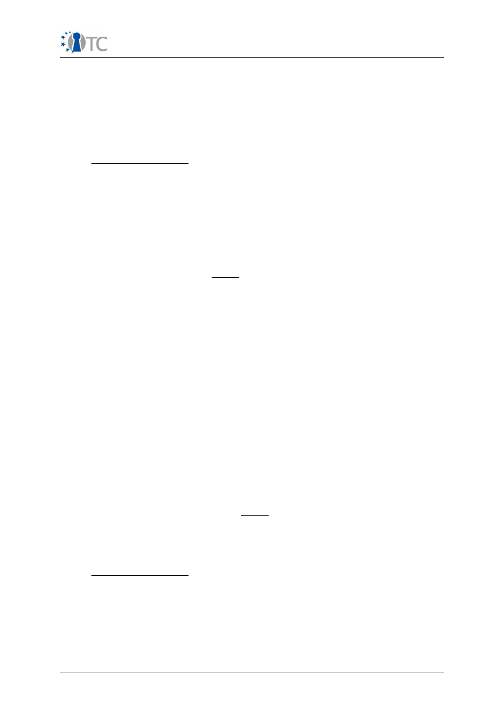
Publishable Activity Report OpenTC
prerequisite for service decomposition, and a partial Java interface to an existing
Trusted Software Stack were developed. An application prototype for multi-factor
authentication was designed and implemented.
While the framework components developed during the first reporting phase were fit
for purpose, the integrated proof-of-concept prototype built with these components
still had to cut corners since supporting components were still missing. Experiences
with the first proof-of-concept prototypes sharpened the project's focus on usability
and user interface questions for virtualized client platforms.
1.1.2 Phase 2 (M13-M24)
OpenTC released its first proof-of-concept prototype that was based on a stripped-
down version of Debian Linux (DSL). The amount of work that had to be put into this
release suggested that building more complex OpenTC distribution from these kinds
of minimal, but sparsely supported versions of Linux would exceed the project's
resources. The project therefore decided to transfer and synchronize its intermediate
results with the official release cycle of OpenSuSE distributions. While this required
substantial effort, it allowed to employ an industry grade, highly automated build and
packaging system from then on.
The technical activities during this phase were guided by requirements from the
'Corporate Computing at Home' (CC@H) use case developed by the project. The list
of technical achievements includes the finalization of the work on supporting
advanced CPU architectures for AMD CPUs. The Linux port for the Infineon TSS was
made available, Java wrappers for C-implemented Trusted Software Stacks were
extended to cover their full functionality, and work on a purely Java based TSS was
taken up. Mechanisms for service disaggregation were extended to cover policy
controlled IPC and I/O mechanisms for both hypervisors. Xen services for console I/O
and GUIs, compartment launching, and networking, trusted virtualised storage and
integrity/credential management were prototyped, and the Xen hypervisor was
improved to allow the hosting of proprietary operating systems. Selected
components of the L4 microkernel were ported to a test platform for mobile devices.
Designs, specifications and test plans were produced for all applications, most of
them accompanied by first prototypic implementations. The first version of the PKI
subsystem was finalized and published.
Progress on software evaluation methods had evolved to a point that allowed to
subject large software packages to black and white box testing. Such tests were
performed for the Linux port of the Infineon TSS and the core components of the Xen
hypervisors. At a conceptual level, the project developed requirements and design
for Trusted Virtual Domains applied to trusted virtual datacenter architectures, and
extensive basic research on present and future directions for Trusted Platform
Services was performed.
The second phase was finalized with prototypes for most security components for
single trusted platforms in place. The CC@H proof-of-concept prototype combined
these components into a compelling use case: a virtualized trusted client platform
with integrity measurement, support for hosting legacy operating systems, and a
user interface supporting easy interaction with different compartments and
provisions to counter the mimicry of trusted GUI components.
1.1.3 Phase 3 (M25-M42)
The second proof-of concept prototype 'Corporate Computing at Home' was extended
and ported to an up-to-date distribution of OpenSUSE. By this time, OpenTC made full
use of the automated SuSE build an packaging process. The result was released as
Open Source distribution under GPLv2. It includes all components necessary to run
the use case, including infrastructure and server elements to generate certificates
and perform remote attestation.
An important strand of the work continued on selected aspects of virtualized clients.
OpenTC Publishable Activity Report
5/40

Publishable Activity Report OpenTC
Additional user studies were performed, on the design of a suitable graphical user
interface in particular, which were soon extended into investigations on a complete
redesign of the whole graphics subsystem. The result is a hypervisor-agnostic
architecture for high performance graphics virtualization. A prototype was developed
for for client OpenTC platforms running Xen that proved a big reduction of the
amount of graphics related trusted code base.
Regarding low level platform components, the Linux port of the Infineon TSS to Linux
and a new releases of the Java TSS were finalized, and key management components
were redesigned and equipped with configuration templates for ssh, IPSec, and
Racoon. PKCS#11. PKI management components were extended with simplified
communication protocols for multiple languages, and prototypes for Trusted
Channels were developed. The implementation of the virtual network switch was
extended to include IPSec as transport protocol, and the virtual TPM architecture was
integrated with the hypervisor Basic Security Management Interface (BMSI) and the
integrity management component (HIM).
The bulk of the technical work was driven by datacenter scenarios, which drove the
work on the last proof-of-concept prototype. It covers a large subset of the OpenTC
framework, including policy management security enforcement mechanisms of the
OpenTC platform. Several additional building blocks were designed and integrated as
support for Trusted Virtual Domains: TVD master and proxy, the virtual network
switch, components for storage, machine life cycle management, and extended
public key infrastructure.
The partners also developed a lightweight management infrastructure based on the
cross-hypervisor management interface of
libVirt.
A CIM provider for TPM was
prototyped based on a DMTF draft analysis, Research on new directions and
foundations of Trusted Computing led to a number of high-profile publications.
All application-related sub-work packages delivered their implementations. The use
cases and proof-of-concept span the fields of digital rights management, messaging
infrastructure, electronic signatures, encryption file service and multi-factor
authentication. The work package also provided the security model requirements and
refinements for a minimal API for the security services.
Confidence in the underlying hypervisors is empirically supported by the
comprehensive black box testing and static code analysis performed on these
components. No vulnerabilities that would compromise Xen isolation mechanisms for
execution domains. Static analysis also indicated a high quality of the L4 and OSLO
boot loader implementations. Further targets were the new, Gallium based graphics
virtualization implementation and the TPM driver for TrouSerS. Important community
benefit was achieved by publishing the ACSL specification language, releasing and
supporting the FRAMA-C analysis toolkit for public use, and by disseminating the
extended Open Source Testing Methodology.
Microkernel-based OS components and the TPM emulator were ported to the Infineon
S-GOLD3 development platform for mobile devices. For this context a detailed
security analysis performed. Based on the analysis of requirements a Secure Wallet
design and implementation, a comprehensive set of mechanisms necessary to
implement trusted applications for mobile platforms was determined.
OpenTC took care to base its final release on the most recent release of OpenSUSE.
This required the huge effort of two porting, integration and packaging cycles. Our
final results will be released as a dedicated distribution OpenSUSE 11.1. The
integration of the OpenTC build process with user friendly graphical interfaces
provided by SuSE Studio promises to greatly simplify the production of distributions
and purpose build execution environments in future. The exploitation plan was
finalized and started to put into practice. First successes include the adoption of
OpenTC results in products and product roadmaps of several industrial OpenTC
partners. OpenTC partners continued their work on standardizing in the context of
OpenTC Publishable Activity Report
6/40

Publishable Activity Report OpenTC
the Java Community Process and the Open Mobile Terminal Platform Group.
Finally, OpenTC extended its activities on dissemination and exploitation, informing
the experts as well as the non-expert public about the challenges addressed and
research achieved in research on trusted computing, platforms, and infrastructure.
OpenTC has been well recognized both on the European as well as the international
scale and has fostered numerous scientific exchanges between scientists and
researchers in Europe, Asia and the US. OpenTC was instrumental to create a thriving
research ecosystem on trust technology in IT that will continue to thrive beyond the
duration of the project. The decision to work on the basis of Open Source Software
has greatly contributed to this success.
1.2 Dissemination of Knowledge and Results
In line with the strategy pursued during the previous reporting periods, the project's
results of year two were packaged and distributed as Open Source under GPLv2.
Since mid-2008, the release is produced by the OpenSUSE build system KIWI. The
packaging of the end release is in progress, and a version including the latest
updates and bug fixes will be finalized in mid 2009. The minor shift in the planned
release date is due to the project's decision to deliver its results with the latest
available OpenSUSE distribution 11.1, which involved additional porting efforts.
OpenTC maintained a high level of dissemination and training activities, firmly
establishing its concepts and results in academic research and publishing, training,
and standardization. During the reporting period, OpenTC's results were presented in
about 100 mostly international conferences and workshops. The project partners
published some 95 scientific papers and articles, and participated in more than 65
presentations, talks, and discussion rounds. In addition 16 academic courses were
designed and delivered to national and international audiences. As in the previous
period, the new proof-of-concept prototype from year two was extended and
employed as training system. For the foreseeable future, the final OpenTC core
architecture will be maintained as a base platform for academic and professional
training.
1.3 Exploitation of Final Results
A subset of framework components developed by OpenTC during the final reporting
period was integrated for the final review in a proof-of-concept prototype for Trusted
Virtual Datacenters. This demonstrator will be included in the final release of the
framework, which will be released under Open Source license as dedicated
OpenSUSE 11.1 distribution.
In addition to this distribution, OpenTC results already have been or are in the
process of being exploited by various partners. The components for a disaggregated
domain launcher, the new graphics subsystem and improvement resulting from
testing and code analysis will become integral part of the Xen hypervisor.
Infrastructure and management components such as the virtual network switch and
the TVD-aware
libvirt
management extensions will be included in future versions of
official SuSE distributions.
Trust and virtualization management approaches explored in OpenTC are considered
for inclusion in IBM's management software, and architectural concepts for Trusted
Virtual Clients investigated by this project have been included in product roadmaps
of HP. Applications developed for the OpenTC framework are exploited by the
partners either as products or for internal purposes. The distribution will be
maintained for the foreseeable future, including the training platform developed on
top of the OpenTC architecture.
OpenTC results have further been exploited through standardization activities the
Java TSS API within JSR321 Expert Group with a first release of the specification for
Early Draft Review in April 2009. OpenTC partners provided input to and reviewed the
Open Mobile Terminal Platform Group's specification on Advanced Trusted
OpenTC Publishable Activity Report
7/40
Publishable Activity Report OpenTC
Environment (TR1).
1.4 Future Directions
1. OpenTC contributed substantially to turning trusted platforms and
infrastructure into a now well established area of IT security research. It was
instrumental to create an active European and international community of
researchers and practitioners that reaches far beyond the group of original
OpenTC partners, and has helped to foster this community through continued
presence in workshops, conferences and seminars. To maintain this young
research ecosystem beyond the end of the project, we would strongly
encourage to create a European Network of Excellence for Trust in IT and offer
our support to set it up.
2. The validation efforts of OpenTC have helped to establish a baseline of trust in
the isolation capabilities of the underlying hypervisor technology and a
number of critical core components. Still, it was only possible to cover a small
fraction of components that constitute a trustworthy system. Much remains to
be done in this area, for example, the development and application of
validation methodologies and metrics, the establishment of coding practices
that enable static code analysis, of freely accessible software production
chains that validate, build, test and deploy software packages in a trusted and
transparent work flow. A more general goal is the creation of trustworthy
(meta)data repositories on characteristics of binaries and their corresponding
implementation. We learned that the almost complete lack of this type of
information is one of the main inhibitors for applying trusted computing
technology and would consider this line of research valuable for future
projects.
3. A more fundamental question concerns the general tendency of Trusted
Computing of moving ever more functionality into firmware and hardware. We
may accept that certain core functions and data
must
be protected from
interference and inspection. Still, it is far from clear whether the general move
towards hardware based functions can be equated with improved trust
properties. In line with OpenTC's general approach, it can be argued that
better protection at the expense of transparency may ultimately lead to less
rather than more trust. It seems worthwhile to investigate whether this
dilemma could be addressed by a minimal core of protected functions and
data in combination with tamper-resistant, programmable hardware. The
hardware programming would lend itself to inspection, which reintroduces the
transparency that is otherwise 'lost in hardware'.
1.5 Open Trusted Computing Partners
The OpenTC project is formed by an international multidisciplinary consortium
consisting of 23 partners:
●
Technikon Forschungs- und Planungsgesellschaft mbH (project coordination,
AT);
●
Hewlett-Packard Ltd (technical leader, UK);
●
AMD Saxony LLC & Co. KG (DE);
●
Budapest University of Technology and Economics (HU);
●
Commissariat à l’Energie Atomique – LIST (FR);
●
COMNEON GmbH. OHG (DE);
●
Forschungszentrum Karlsruhe GmbH – ITAS (DE);
●
Horst Görtz Institute for IT Security, Ruhr-Universität Bochum (DE);
●
IBM Research GmbH (CH);
OpenTC Publishable Activity Report
8/40
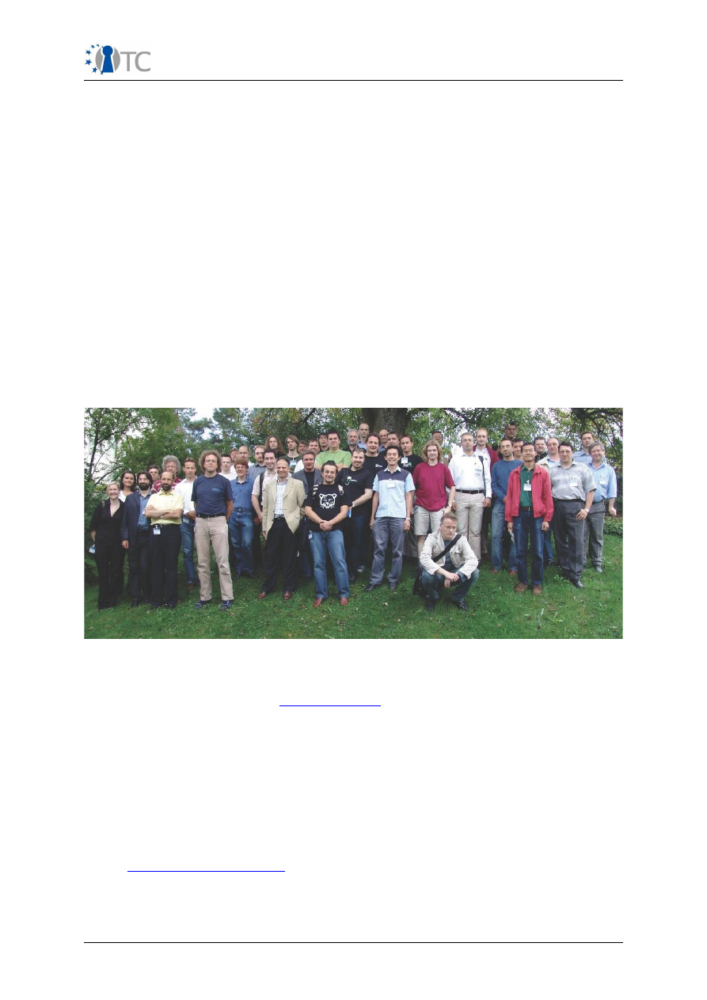
Publishable Activity Report OpenTC
●
Infineon Technologies AG (DE);
●
INTEK Closed Joint Stock Company (RU);
●
ISECOM (ES);
●
Katholieke Universiteit Leuven (BE);
●
Politecnico di Torino (IT);
●
Portakal Teknoloji (TR);
●
Royal Holloway, University of London (UK);
●
SUSE Linux Products GmbH (DE);
●
Technische Universitaet Dresden (DE),
●
Technische Universitaet Graz (AT),
●
Technische Universitaet Muenchen (DE),
●
Technical Universiy of Sofia (BR)
●
TUBITAK – UEKAE (TR);
●
University of Cambridge (UK).
Picture 1: OpenTC Consortium at General Assembly Meeting in Zurich Sept. 2006
The total volume of the project is estimated to be 17.1 Million Euro, part of which will
be contributed by the EC. Visit
www.opentc.net
to learn more.
For further information please contact:
Technikon Forschungs- und Planungsgesellschaft mbH
Burgplatz 3a,
9500 Villach,
Austria
Tel.: +43 4242 233 55-0,
Fax: +43 4242 233 55-77
Email:
coordination@opentc.net
OpenTC Publishable Activity Report
9/40
Publishable Activity Report OpenTC
1.6 OTC Logo
1.7 OTC Disclaimer
The information in this document is provided “as is”, and no guarantee or warranty is
given that the information is fit for any particular purpose. The user thereof uses the
information at its sole risk and liability.
OpenTC Publishable Activity Report
10/40
Picture 2: OpenTC Logo
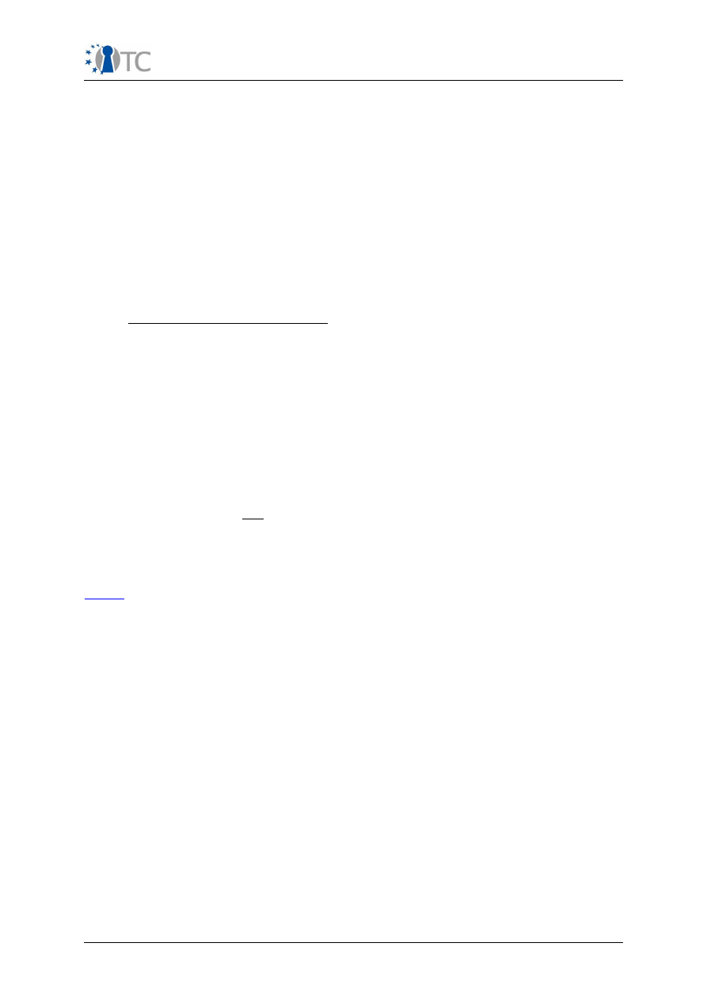
Publishable Activity Report OpenTC
2 Project Execution
2.1 WP02: Requirements Definition and Specifications
Work package 02 had the main objectives of identifying and defining requirements
for the OpenTC platform and framework, gathering expectation towards proof-of-
concept prototypes, and creating the high-level specification. WP02 had to ensure
that the general requirements were channelled into and taken into account by the
appropriate work packages specifying single components. Specification and
requirements were to be extended in multiple iterations, compiled and published in a
single report.
In summary, WP02 has reached all objectives listed above. The following sections
give an overview of the progress towards the objectives during the project and list
the major achievements of this work package.
2.1.1 Progress towards objectives
Based on a consortium-internal survey and an analysis of external media and
publication, an initial assessment of Trusted Computing and virtualization was
produced, with particular regard to perception and potential relevance for the area of
digital rights management.
OpenTC partner ITAS carried out an initial in-depth survey with external experts to
gather expectations towards OpenTC proof-of-concept prototypes, specifically
regarding direct user interactions with the system. The results were presented to and
discussed with work packages 04, 05 and 06. In cooperation with WP04, WP02
defined characteristics of the first, prototypic user interfaces.
For gathering additional user impressions, the prototypes were presented at
conferences. In particular, feedback on the user interface of the “corporate
computing at home” CC@H prototype has been obtained. This prototype has also
been discussed intensively inside partner organizations.
Further feedback obtained from the presentations at conferences, from reactions to
the OpenTC newsletter and from dissemination events carried out by WP10, was
included to improve the design of the GUI. The user interface as implemented in the
CC@H
prototype was further enhanced to support multiple concurrent operating
systems of both proprietary and non-proprietary nature. Results were presented in a
scientific paper at Future of Trust, Berlin 2008. A final in-depth high-level expert
survey has been conducted on PC virtualization and new threats arising through the
use of this technology.
WP02 cooperated intensively with the other technical work packages (03-09) to
create the requirements and specifications documents (D02.1 - D02.3). WP02
cooperated with WP10 for disseminating the OpenTC results, e.g. by newsletter
articles covering the overall specifications. As an executive summary of the overall
project, WP02 produced the final report D02.4.
As a contribution to clarify the intellectual property on Trusted Computing, OpenTC
partners RUB and HPLB cooperated in WP02 to produce the first IPR study on this
technology. This study has been made available to the TCG as well as the general
public.
WP02 contributed to the definition of the HASK-PP protection profile, which was
produced in a cooperative effort between the German BSI, OpenTC partners RUB and
HPLB, and Sirrix AG, Bochum. This profile defines requirements for high assurance
kernels at CC level EAL5. It has since been certified and been made available to the
general public.
OpenTC Publishable Activity Report
11/40

Publishable Activity Report OpenTC
2.1.2 Major Achievements
WP02 presents the following major achievements:
Production of general requirements and specifications.
These deliverables
include an assessment of TC, DRM and virtualization, with annual updates (D02.1,
D02.2, D02.3). The report contains the general requirements analysis regarding
Trusted Computing, an overview of the architecture and of single services. The
specification covers the basic characteristics of virtualized platforms and the
supporting infrastructure.
Production of specifications of three proof-of-concept prototypes
developed
by OpenTC, namely:
●
A secure browser environment for conducting electronic transactions, such as
home-banking, called PET (Private Electronic Transactions), isolated from the
user's main operating system,
●
A virtualized PC architecture with multiple isolated compartments usable for
corporate data as well as for private and other data, supporting both Open
Source based and proprietary operating systems,
●
A proof-of-concept prototype for a virtualized data center. It consists of
physical nodes and infrastructure elements realizing the concept of Trusted
Virtual domains allowing to isolate compartments and networks for different
customers.
All solutions are implemented on the basis of an advanced combination of Trusted
Computing and virtualization technology.
Production of specifications for single applications
, namely the “
Open
Publication System
” (an interoperable DRM system), the
Encrypted File System,
the
Message Exchange Infrastructure
and the “What you see is what you sign”
application. The corresponding prototypes demonstrate how to employ trusted
platforms for purposes ranging from encryption services or digital rights
management to establishing a baseline of trust between multiple parties through
multilateral assurance of platform properties. Using virtualization, the impact of
trusted computing can be constrained to defined compartments, leaving other
compartments unaffected. Specification summaries for the use cases “Private
Electronic Transactions”, “Corporate computing at home”, “Trusted Virtual Domains”
and “Secure Wallets” were published in the OpenTC newsletter.
Co-design of the graphical user interface
based on data gathered the initial
expert survey. The solution allows simplified manipulation of compartments through
a trusted section of the screen, using a user-selected sealed image. Findings from
this design process were taken up by WP04 to design a new graphics subsystem with
radically reduced code base and generic trusted path capabilities.
Final expert survey on PC virtualization and threats.
The survey confirmed
that supporting mechanisms for mutual isolation between personal and corporate are
appreciated, that the utilization of Trusted Computing technology is considered
beneficial for the protection of private data, and that a combination of TC and
virtualization can support growing demands for auditability. Our findings confirm that
the project has tackled an area of growing importance and has been on the right
track with regard to the solutions it provided.
Development and certification of Common Criteria V3.1 EAL 5 Protection
Profile
“High Assurance Security Kernel”, together with Sirrix AG, atsec information
security and the German Federal Office for Information Security (BSI). The PP defines
mandatory security requirements for a security kernel which provides management
and separation of compartments running on top of the security kernel. It can be used
to evaluate future kernels, e.g., products using the OpenTC architecture.
OpenTC Publishable Activity Report
12/40
Publishable Activity Report OpenTC
Production of patent study on Trusted Computing:
more than 500 related
patents have been identified. The extended summary of this study has since been
published and was made available to the Trusted Computing Group.
2.2 WP03: Basic Interfaces and Trust Layers
This work package addresses the interfaces of trusted computing hardware elements
to the requirements of software APIs, separating the functions of the platform’s
enhanced main processor, security module (TPM) and relevant peripherals from the
required abstract software layer. The main tasks were to build a prototypic
virtualization platform on the AMD
Presidio
architecture, to port the Infineon TSS
stack to Linux, to provide Java interfaces to the Trusted Computing core functionality
and the Trusted Software Stack, and an exploration whether and how existing
cryptographic protocols and services can be extended to utilize Trusted Computing
functionality.
2.2.1 Progress towards Objectives
CPU support and abstraction
for operating systems to use to access the
virtualization features of an AMD CPU. The prototype includes features to start an
authenticated virtualization environment from Dynamic Root of Trust of
Measurement (DRTM) base. The DRTM is agnostic of the started kernel and runs on
both kernels used in the project. The software and driver packages were finalized for
the adaptation of the new AMD CPU based platforms for Secure Virtual Machines. In
accordance with the work plan, all tasks were completed during the second reporting
period.
TSS stack
was developed with all functions mandated by the TCG TSS specifications.
The package and the Linux test bed were made available. A test plan was developed
in cooperation with WP07, which carried out further tests and functional validations.
Security protocols and services
: Following an analysis of the security and data
models of OpenSSH, OpenSSL, ipsec-tools and PKCS#11 was used for defining the
requirements and design of a Key Management layer (subsequently called KMA).
Specific studies addressed the external authorisation for TPM keys bound to the
platform integrity and the integration of TLS extensions in OpenSSL to support the
design and implementation of a Direct Anonymous Attestation based enhancement
for TLS.
Java wrappers and components:
The initial work addressed Java wrapper for
existing, C or C++ implemented Trusted software stack that made the TSPI layer of
the TSS stack available to Java developers. An updated prototype developed towards
the end of the project works across different TSS implementations. It has not yet
been released to the public, since it is still in experimental stage. A set of jTPM Tools
was developed to provide a set of command line utilities to interact with the system's
TPM.
Java TSS stack:
Advanced work during the second and third reporting period
produced a fully Java implemented TSS stack that directly interfaces the operating
system driver. Based on this implementation, a standardization proposal (Java
Standardization Request) within the JCP (Java Community Process) was initiated and
accepted. An extended version of the jTPM Tools was integrated within the
implementation.
Proxy-based remote attestation:
Client and server components were developed
for OpenTC's first demonstrator prototype, a proxy based mechanism for remote
attestation was developed using a proprietary attestation protocol.
Java execution environment:
This work addressed to reduce the size of a virtual
machine hosting the Java runtime environment and the JavaTSS. Intermediate results
show a reduction of the size to less than 20MB. An integrity measurement
OpenTC Publishable Activity Report
13/40
Publishable Activity Report OpenTC
architecture for the Java VM was developed and integrated in the class loading
procedure.
2.2.2 Major Achievements
●
CPU abstraction and prototyping for dynamic trusted boot. The work was
prepared for dissemination as a basis for the creation of an industry standard
covering the topic in the Trusted Computing Group.
●
Trusted Software Stack for Linux: A ported and thoroughly tested package
implementing the TSS and a SOAP interface.
●
Key Management Adaptation (KMA) service prototype: An architecture for
securing configuration and key files of generic applications through the TPM,
eCryptFS and SMAC - respectively an encrypted file system and a mandatory
access control system both provided by the Linux kernel.
●
TC integrated SSL/TLS, ssh, and IPSec prototypes: Definition of DAA-enhanced
TLS protocol; design and implementation of OpenSSL engine/DAA
enhancements (DAA implementation provided by TPM and a purely software
one based on elliptic curves). Development of KMA configuration files to
secure OpenSSH, OpenSSL, ipsectools and PKCS#11.
●
Java wrapper modules for C-implemented Trusted Software stacks, exposing
TSS functionality to Java developers.
●
Java implemented TSS and corresponding tool set with Simple Object Access
Protocol (SOAP) support for TSP-to-TCS communication.
●
Standardization of Java-APIs for Trusted Computing as JSR 321, taking the role
of the specification lead.
2.3 WP04: Trusted OS Development
Work Package 04 aimed at building the operating system components for the
OpenTC. Its focus was the integration of Trusted Computing and virtualization
technology, system level security and integration with hardware capabilities. Its three
high-level goals were
●
To investigate the integration of the chain of trust with the virtualization layer
and virtualization of the TCG components,
●
To explore and utilize new CPU functionality (AMD Pacifica, Intel LT) for trusted
virtualization, and
●
To investigate commonalities in trust and security management for both
hypervisors used by OpenTC, namely Xen and L4
The main practical task of the work package was to develop core security
components of the OpenTC Trusted Platform for both hypervisors, using a common,
platform-independent approach where feasible. In summary WP04 has made large
progress towards its stated goals and has achieved all its major objectives. The
following sections give an overview of the detailed activities.
2.3.1 Progress Towards Objectives
●
Regarding the three goals listed above, WP04 has made progress as follows:
●
Chain of Trust, Integration of Virtualization and TC technology, virtualization of
TCG components: The WP04 partners determined a suitable subset of TPM
functions that has to be virtualized to enable integrity measurement and
attestation for hosted OS instances (compartments). On this basis, WP04
designed a chain of trust between the hardware TPM module and multiple
virtualized TPMs on the same platform. This included concepts for persistent,
protected data areas of virtualized TPMs as a prerequisite for recreating trust
environments. Basic mechanisms and interfaces were designed and
OpenTC Publishable Activity Report
14/40
Publishable Activity Report OpenTC
implemented that can support the migration of trust environments (including
virtualized TPMs) to remote hardware platforms.
●
Utilizing new CPU Functionality for Trusted Virtualization: WP04 analyzed
hardware, software and hybrid mechanisms for trusted virtualization, in
particular with regard to engineering trade-offs between isolation,
performance, and legacy support. In cooperation with WP03 (AMD), new CPU
features were used to design and implement a trusted re-boot process that
can be initiated from an already booted system. CUCL and HP adopted support
for hardware virtualization offered by the new CPUs to demonstrate that the
legacy and proprietary software can be hosted as virtual instances under Xen.
●
Security and Trust Management for L4 and Xen: WP04 investigated policies
and configuration attributes, representation, and enforcement mechanisms
appropriate for a trusted hypervisor layer, its management components and
hosted operating system instances (compartments). A basic set of functions
for managing the configuration, policy, and operation of this software layer
was defined; the results were taken by WP05 as a basis for defining policies
for Trusted Virtual Domains. WP04 defined and prototyped a corresponding
interface common to both L4 and Xen and implemented prototypes on L4 and
Xen.
●
Synergetic Approaches: WP04's initial aim to fully abstract from the type of
the underlying hypervisor layer proved to be somewhat over-ambitious.
Fundamental differences between the two hypervisors architectures (notably
in process and memory management) worked against unifying the technical
semantics of the kernel interfaces of Xen and L4 with respect to the above
mentioned API, policy and configuration representation. Interoperability with
existing management software was a negligible point when the project was
conceived four years ago, but it became of increasing importance as a
growing body of virtualization management software was developed
independently of OpenTC. We also realized that introducing new layers of
abstraction for hypervisors would render most of these tools useless, which
was highly undesirable with regard to the work performed by WP05.
●
The current solution provides interoperability for the core security
components, striking a balance between what might be desirable and what is
actually feasible and practical. Future attempts to unify the semantics of
different hypervisors should probably follow the approach taken by WP05,
namely, the utilization and extension of management interfaces such as libvirt
that have since gained wider acceptance in the community of developers and
users.
2.3.2 Major Achievements
The major achievements of WP04 are:
●
Dynamic Root of Trust for Measurement (DRTM) implementation:
as
part of our research on chain of trust and new CPU features, WP04 has
implemented a DRTM module for AMD processors.
●
Basic Management and Security Interface specification and
implementation
:
WP04 produced a specification of basic security features
required by hypervisors to support Trusted Computing model for all types of
applications. This specification was geared towards minimizing the Trusted
Computing Base and describes the minimal security and trust requirements
for both hypervisors. WP04 produced a prototype implementation for L4 and
Xen covering the specification.
●
Disaggregation of Trusted Computing Base:
WP04 developed a
disaggregated launcher for compartments that operates independently of the
Xen management domain, allowing to remove important privileges from the
OpenTC Publishable Activity Report
15/40

Publishable Activity Report OpenTC
latter. This 'domain builder' implements part of the BMSI requirements.
●
Integrity Management and TPM virtualization:
In collaboration with
WP05, WP04 designed and implemented an integrity management framework
which has been integrated with the BMSI implementation and the proof-of-
concept prototype for virtual TPMs. As part of its deliverables, WP04 has
produced a design for TPM virtualization. A partial proof-of-concept
implementation of this architecture was implemented on both hypervisors.
WP04 investigated the factual security provided by today's TPM modules, and
RUB proved the practical feasibility of low-cost hardware attacks against TPM
hardware.
●
Network and Storage separation:
WP04 designed and developed a virtual
network switch as the basic security component that manages and polices
compartment access to different virtual networks. This switch is an integral
part of the trusted platform and a prerequisite for Trusted Virtual Domains as
explored by WP05. As an enabler for a trusted boot process WP04 co-
developed the file system overlay method used in all proof-of-concept
prototypes.
●
Secure Graphical User Interface:
WP04 designed and implemented a
prototype for a high performance and safe sharing of the Graphics Processor
between different compartments. The prototypic implementation was
developed under Xen for practical reasons, however, the existing design and
implementation can be ported to L4 with minimal additional effort. The
solution provided has reduced the reliance on untrusted driver and graphics
server code by an estimated 95%.
●
Hypervisor abstraction:
All trust and security components and APIs
developed by WP04 are interoperable between and agnostic to the type of
hypervisors they are running on. WP04 designed and implemented common
inter-process and RPC mechanisms for both architectures that allow
communication through a trusted path.
●
Adoption of findings from WP07:
results from the extensive code analysis
performed in WP07 were analysed in order to determine whether they pointed
to actual flaws in the hypervisor software. Where this was the case, the
software was fixed accordingly, resulting in improved security and robustness
of the packages.
In addition to the achievements listed above, WP04 was responsible for providing the
base platform for all proof-of-concept prototypes and distributions, including
integration, testing, bug fixing and packaging. This line of activity was not foreseen in
the original proposal, but was taken up to ensure the success of the overall project.
Similarly, work on a secure graphical user interface and 3D support was not part of
the original planning. The desirability of this component arose from experiences
gained from the 'Coporate Computing at Home' scenario in year two and from
specific requirements for management consoles. It was addressed to prove that a
hypervisor-neutral design of complex, security enhanced components can be
achieved even under severe performance constraints. Work in the different areas
covered by WP04 has resulted in numerous peer-reviewed publications.
2.4 WP05: Security Management and Infrastructure
Work package 05 aimed at building the policy management and public key
infrastructures for the OpenTC framework. In particular with regard to infrastructure
for “trusted Virtual Datacenter” scenarios, the core security requirement is mutual
isolation of execution environments and domains. Customers hosted in a virtual data
center should never be able to perform unauthorized data exchange. This should
hold even in case of administrator mistakes. This poses several security challenges
such as customer isolation across all resources and management by different
OpenTC Publishable Activity Report
16/40
Publishable Activity Report OpenTC
management tools.
2.4.1 Progress Towards Objectives
WP05 has made substantial progress in all areas of its activities. The following
sections give a survey of the progress in the different work areas:
Design and Implementation of Security Services API
for applications, e.g., as
developed in WP06. WP05 contributed to the requirement analysis for a secure UI
(SUI), the design of the TVD storage and network infrastructure and the TVD
implementation on L4 (TVD Master, TVD Proxy, port of HP virtual networking
infrastructure to L4, adaptation of the
libvirt
virtualization management software and
TVD access control infrastructure to L4).
Design and implementation of trusted channels
: Two alternatives were
designed, implemented and optimized for online transactions (based on TLS) and for
situations where trusted platforms can be disconnected from their peers, for example
for use within infrastructures like enterprise rights management. The second
alternative is used as part of the L4 TVD implementation. The TLS-based trusted
channel has been published and presented at ACM STC 2008 together with POLITO.
Design and implementation of security and management components:
The
design and implementation of the compartment manager was finalized. WP05
designed and implemented access control mechanisms for
libVirt
access and
awareness for trusted virtual domains in the L4 Compartment Manager and libVirt.
For the OpenTC demonstrator, WP05 is in process of finalizing the TVD
implementation and verifying interoperability and work flow when used together with
the Xen TVD implementation. A significant amount of work was invested into the
integration of all components and automation of work flows for the 'Virtual
Datacenter' proof-of-concept prototype
Foundations of Trusted Computing, Privacy and Cryptography:
WP05 has
contributed to the area of
privacy-enhancing Trusted Computing Protocols
based on
property-based attestation. The goal was to base policy decisions of remote parties
on abstract properties of a platform (fulfilling certain security requirements) without
referring to specific software and/or hardware configurations. A system model for
property-based attestation was designed and various solutions based on existing TC
functionality were developed. RUB developed concepts for property-based virtual
TPM and secure virtual private networks, a cryptographic protocol for property-based
attestation, and a framework for enterprise rights management with trusted virtual
domains. These works included detailed security analyses of the novel proposals and
prototypic implementations. Research results were published and presented at three
international, peer-reviewed scientific conferences.
New technical approaches to Trusted Computing:
WP05 evaluated approaches
to implement trusted computing functionality on low-cost embedded and
reconfigurable devices. In this context, “physical un-clonable functions” are a
promising enabling technology. WP05 also investigated an alternative TPM
architecture, which can be used as a general purpose secure co-processor to run
arbitrary security critical tasks. Results of this research were presented in two peer
reviewed scientific publications.
Policy Management and Policy Enforcement:
WP05 partners
collaborated on
developing a new
multi-level approach to multi-tenant isolation policies.
The goal of
this approach is to isolate all resources of multiple customers in a data center while
enabling controlled sharing of certain resources by specifying isolation between
different domains in a base policy which is used to either validate or, alternatively,
else generate isolation policies for specific resources such as storage or networks.
The results were published in an international, peer-reviewed scientific periodical.
Auditing framework for virtual infrastructures:
This framework and prototype
OpenTC Publishable Activity Report
17/40
Publishable Activity Report OpenTC
validates the security of a virtual infrastructure by discovering the detailed
configuration of multiple virtual hosts, deriving their logical relationships (e.g.
VLANs), identifying isolation domains across hosts and comparing these actual
security zones with the designated ones.
Intrusion detection in virtual environments:
This activity aimed at moving virus
detection and intrusion response out of the many guest machines into few security
VMs per host. A dedicated security VM can then introspect other guests and scan for
viruses in their virtual memory. It can also observe network traffic and act as a
network-level intrusion prevention system for virtual networks that are normally
invisible from the outside.
Security-enhanced network virtualization:
The design elements of the vSwitch
and VNET were stabilized to support for the networking elements for the intermediate
and final proof-of-concept prototypes. The results of the stabilized design have been
published in the R2D2 workshop. The vSwitch was adapted to support the most
recent Linux kernel versions and underwent extensive stress-testing. The
implementation was improved to simultaneously support EtherIP and IPSec. The
command line tools and interfaces were extended to cover more functionality. In
addition, WP05c provided modules and wrappers to support web based management.
As a result, the vSwitch can now be configured and managed remotely as resource of
a platform or a Trusted Virtual Domain (TVD).
Integrity management framework:
HPL has finalized the design and the
Application Protocol Interface (API) for the Hierarchical Integrity Management (HIM)
framework. The finalized design and implementation details have been published as
an HPL technical report. HPL has implemented the majority of the API and has
collaborated with WP06 partners (e.g. POLITO) in investigating how to co-ordinate
Virtual Machine (VM) integrity management with application integrity management. A
final achievement has been the finalization of the WP05/06 API that allows WP06
applications to control portions of the underlying hypervisor.
Resource management:
As contribution for the final Virtual Data Center proof-of-
concept prototype, HPL has designed and prototyped a lightweight, agent based
resource management framework that covers essential VDC aspects (in particular
networking, virtual machine management, and basic support of Trusted Computing
hardware). The modular design allows for simplified integration of other management
aspects; modules can be turned into CIM-providers with minimal effort. With regard
to enterprise-grade management, HPL has explored CIM support for trusted platforms
and infrastructure components. Based on a DMTF draft, we have designed and
prototyped a CIM provider for Trusted Computing Modules that is geared at the setup
and configuration stage of data center nodes.
Security-enhanced storage virtualization:
HPL has investigated policy
management issues around storage virtualization with other partners including IBM
and RUB. The results of this investigation are published in an article in a special issue
of JCS. A storage isolation prototype has been implemented by IBM.
Isolation management in Virtual Data Centers:
HPL has worked with partners
(IBM, POLITO and RUB) to investigate policy management and enforcement in virtual
data centers. The results of this investigation are published a special issue of JCS.
The implemented TVD master and proxy ensures that each domain owned by a given
tenant has a well-defined policy that is enforced across all hosts that are members of
this domain. We also agreed on a final policy language for exchanging security
policies between Xen and L4.
Virtual Platforms:
HPL's WP05 management related work yielded input for WP04's
design of security services that enable strong binding of virtual machines. The
preliminary results of this investigation were prepared for submission to ACM CCS
STC.
Secure User Interface (sUI):
The use case for a management console and
OpenTC Publishable Activity Report
18/40

Publishable Activity Report OpenTC
components from WP05c guided the requirement analysis, design and
implementation for secure graphic subsystem alternatives performed in WP04. This
work is geared at user interface virtualization (joint work with partners CUCL, RUB
and TUD).
Key Management Infrastructure:
WP05 developed a design of a PKI capable of
managing TC PKI objects as outlined in the TCG specifications. The design contains
multiple services (i.e. certification issuance, certificate validation), transport
protocols and the appropriate client software. Ambiguities in the original
specifications from the TCG led to the development of alternative solutions focused
on reconsideration of the existing privacy-CA-prototype design with improvements
directed towards a simplified communication protocol for multiple languages. Further
practical work on cryptography concerned a Java-based implementation of Direct
Anonymous Attestation and the partial implementation of Trusted Channel concepts.
2.4.2 Major Achievements
WP05 can present achievements for new approaches and management paradigms
for trusted computing, platform and infrastructure components that are included in
the proof-of-concept prototypes:
●
Components for the OpenTC Platform and the VDC Proof of Concept:
WP05 has developed policy management and security enforcement
components of the OpenTC platform for the VDC proof of concepts. This
includes:
●
TVD master and TVD proxy
and a trusted channel for policy
distribution and host validation
●
Secure virtual networking
, storage, and machine life cycle
management for L4 and Xen.
●
Extended and improved public key infrastructure for Trusted
Computing
●
Research and feasibility studies in multiple areas of distributed
trusted platforms:
new approaches for trusted computing, security
enforcement and audits in virtual environments, and intrusion defense for
virtual systems.
●
Proof of concepts for particular aspects (e.g. auditing and intrusion
response)
Work from WP05 has led to a large number of peer-reviewed publications.
2.5 WP06 Use Examples / Prototype Applications for Proof-of-
Concept
This work package addresses application prototypes based on the trusted platform
architecture and security services developed by OpenTC The work package also
provided the security model requirements and refinements for a minimal API for the
security services. The use cases and proof-of-concept span the fields of digital rights
management, messaging infrastructure, electronic signatures, encryption file service
and multi-factor authentication. Due to the variety of topics addressed, progress and
achievements are listed per use case.
For the majority of the work packages (4 out of 5), the actual technical
implementation started after the completion of the first OpenTC's platform prototype
at the mid term of the project. The use cases were then ported successively to the
two platform prototype extensions from work period two and three.
2.5.1 SWP6a: Digital Rights Management
This work package addressed the use of trusted platform technology for managing
digital content. Particular effort was spent on fair-use scenarios. The main use case is
OpenTC Publishable Activity Report
19/40
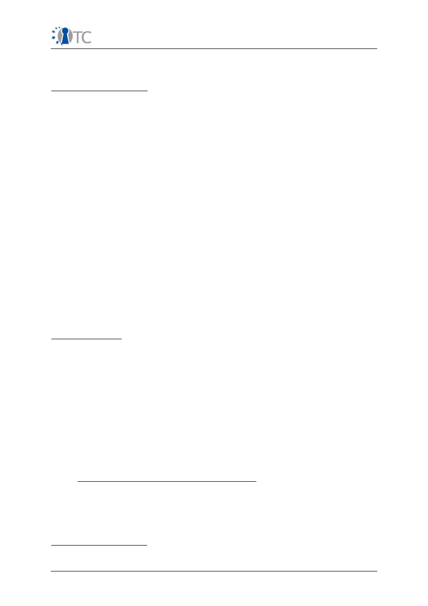
Publishable Activity Report OpenTC
geared towards media such as audio and video, the concept is applicable for other
scenarios that demand management of content based on policies encapsulated in
trusted metadata (e.g. document management).
Progress towards objectives:
Initial requirements specification:
Based on the analysis of major DRM systems
an initial requirements specification was given and contributed to OpenTC's
specification. During the course of the project, a concept system prototype and a
final prototype using a Rights/Content issuer framework was produced that is based
on several MPEG-21 standards.
Initial concept system prototype
was developed with a DRM Core using a
prototypical REL interpretation engine, and a secure media player based on VLC. This
initial prototype was further updated to be shown in the demonstrator in the 2007
review.
Final prototype:
This prototype consists of 3 main components: the DRM core, the
Management Application and the Secure Media Player. The MPEG-A standard “Open
Access Application Format” serves as an exchange format for files and metadata
between the virtualized components.
Management Application:
It allows to create, manage and consume any content
independent of the content type. The application packages content in an exchange
format and attaches metadata to these contents. The Management Application is
also compliant with the standard ISO/IEC 23000-7 Open Access Application Format
which extends the system with several additional functionalities, e.g. the support for
Open Content licenses. Furthermore the Management Application can communicate
with the DRM Core via an API, to exchange licenses and keys.
Secure media player:
the player was gradually extended to support any media file
type (supported by VLC). License translation was implemented in the DRM core to
provide interoperability with OMA DRM (ODRL) system. Additional functionalities were
added to the rights expression language for fair use.
Major Achievements:
●
DRM Core
supporting secure license and key storage, user management,
license interpretation, translation and generation.
●
Management Application
supporting content creation (protected / signed /
unprotected), exchange, export, and rendering (for audio, video, image, text
files)
●
Secure media player
supporting multiple media formats, license translation,
and support for fair use (copy, two variations of adaptations, burning and
selling)
●
Integration of DRM system into the Virtual Datacenter
proof-of-concept
prototype (web-based content server as a showcase for fair-use DRM in this
scenario).
●
Leading and coordinating the activities of this work package
2.5.2 SWP6b: Message Exchange Infrastructure
This work package is concerned with a message exchange infrastructure that exploits
trusted computing mechanisms (short: MEITC). The work explores whether and how
confidentiality, integrity, source (sender) authentication and non-repudiation of sent
messages can be supported using capabilities of the OpenTC framework and the
security features of TPM.
Progress towards Objectives
Determining the required functionality:
It concerned trusted computing and
OpenTC Publishable Activity Report
20/40
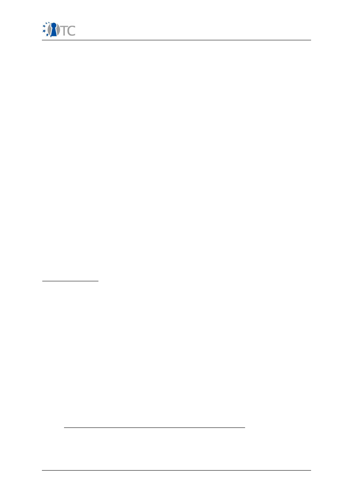
Publishable Activity Report OpenTC
platform virtualization support for a message exchange system (TPM-based key
generation, registration, persistent storage, export). The Software Requirements
Specification of the MEITC system was written in compliance with the IEEE 830-1998
Guidelines and included in OpenTC's specification.
Backbone for the messaging system
: It includes OpenTC specific components
(TSS, trusted boot loader, TPM tools, Xen) and messaging software (Postfix, Dovecot,
MySQL, Tomcat, x-sig, OpenSSL, Squirrelmail, PHP, Apache, Cyrus SASL). A single
virtual machine was used to host all services.
First development cycle:
The architecture used TPM sealed keys for block device
encryption with
dmcrypt
and Xen tools to protect a dedicated virtual disk or loop file
system for the Certificate Service Provider (CSP) key database. The development for
MEITC administration and MEITC certificate manager applications using Java Servlet
Pages (JSP) was started in parallel.
First prototype:
Basic implementation of a web based e-mail exchange
infrastructure where users can read and delete their e-mails on a remote e-mail
server which connects to a MySQL database. A web based interface is used to
execute read and delete functions. Features still missing at this point were a fully
functional TSS stack implementation, security services for TC, and privacy enabled
PKI for OpenTC.
Second development cycle:
A JSP based web administration tool was developed
for MEITC administration. It supports the creation, deletion and modification of
accounts, domains and quotas on MEITC database. The prototype was ported from
Pardus Linux to OpenSUSE and packaged to utilize the automated build
infrastructure.
Second prototype:
This prototype distinguishes application and database domains
that are hosted in isolated compartments, thereby leveraging OpenTC platform. Two
subsequently delivered revisions of the this prototype included further additions as
listed below. The competed system comprises a web server, mail and database
server and services for logging, certification, and trusted computing.
Major Achievements
The final results of this SWP include the following achievements:
●
Requirement analysis according to IEEE 830-1998 Guidelines
, design
based trusted virtualization
●
Messaging system
employing isolation and hardware based generation as
well as protection of keys as core security features,
●
Development of a TPM sealing module
tailored to the need of the system
●
Combining TPM with OpenSSL:
Investigation on how to merge TPM based
key generation with OpenSSL based generation of certificates for signature
keys.
●
Administrator application for messaging system
with navigation
elements reflecting the status of the TPM and TSS status information (TPM self
test, version, public endorsement key) and AJAX interface
●
Logging subsystem:
provides signed logs (MySQL, Postfix and Tomcat) by
means of OpenSSL and the TPM Engine and includes a log module user
interface
2.5.3 SWP 6c: Electronic Signature Application Prototype
This work package investigated the requirements for a electronic signature system
that offers enhanced protection from display mimicry and keystroke logging during
the signing process. This goal is captured in the actual title of the use case, namely
What You See Is What You Sign (WYSIWYS). In accordance with the work plan, the
OpenTC Publishable Activity Report
21/40
Publishable Activity Report OpenTC
efforts started in month 16.
Progress towards Objectives
Definition of requirements and specifications:
The introductory analysis
determined the technical requirements for a (WYSIWYS) approach. These had to be
mapped to security properties provided by the OpenTC architecture where possible.
Missing functionality was communicated as requirement to the designers of the
OpenTC platform.
API definition:
The responsible partner POLITO led the interactions between work
packages 05 and 06. A number of workshops were set to discuss the requirements
with regard to the interface definition. Further sessions with all WP06 partners took
place in order to define a first version of an application programmer interface for
security services that are provided by WP05 and a roadmap for its design and
implementation.
First proof-of-concept prototype:
The prototype was designed on the basis of
already existing functionality of the OpenTC platform. The design for the initial
version was based on a high level requirements specification originally unplanned.
The prototype was mainly developed to gain first experiences with the OpenTC
concept of splitting security critical and 'normal' application components in multiple
compartments. This first trial also helped to further define requirements for the
design of WYSIWYS application.
Second proof of concept prototype
: The application was based upon updated
requirements and design. It substantially improved the first design by strongly
isolating application components by executing them in separate virtual machines.
Evidence of the platform integrity (via TPM) is included in and bound to the digital
signatures
Integration with PKCS#11 hardware and software devices
: The prototype was
extended for generating legally valid signatures. It was tested with student ID cards
of Politecnico di Torino, a smart card that generates legally valid signatures.
Reduction of Trusted Computing Base:
The prototype was further enhanced by
using the Library OS developed by WP04 that had become available upstream with
the latest version of Xen. Two of the core modules thereby became tiny and very
efficient. This work is currently wrapped up and will released to the general public.
Updated API definition for security services:
For the duration of the project, the
API definition and its underlying security was continually revisited with regard to the
evolution services developed by WP05 and changes in the approach to management.
Based on the requirements collected from WP05 and WP06, a minimal C API was
defined that makes use the hypervisor-neutral
libvirt
API. It includes extensions to
interact with the security services and a specific API for the Trusted Channel.
Major Achievements
The final proof-of-concept prototype combines services for control, integrity, storage
and viewers with interfaces for trusted and untrusted user input and a hardware
signing device. The particular achievements are:
●
Electronic signature application
with enhanced protection against mimicry
and keystroke logging based on the OpenTC platform architecture with strong
isolation of security critical software components
●
Integration of platform integrity evidence
provided by Trusted
Computing module in standard electronic signatures
●
Integration with PKCS#11
hardware and software components for the
generation of legally valid electronic signatures
●
Leading requirement and specification efforts
for OpenTC API for
OpenTC Publishable Activity Report
22/40
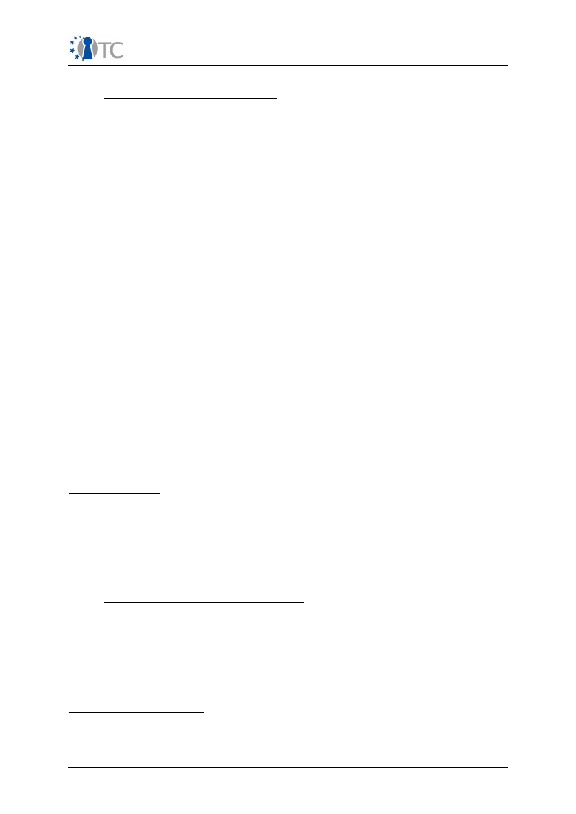
Publishable Activity Report OpenTC
security services consumed by applications.
2.5.4 SWP6d Encrypted File Service
The typical support of TPMs for protecting persistent data concerns the bulk
encryption of file systems. This use case differs from the standard approach by
covering repositories for per-file encrypted data with regard to a multiplicity of users,
owners, and roles. The use case started out from an existing application design that
was gradually re-engineered to utilize the OpenTC platform architecture.
Progress towards Objectives
First Prototype:
Work started out based a design of centralized and monolithic
service for supplying transparent, TPM-enabled, and policy-based encryption for
enterprise systems or a campus-wide set up. TPM utilization was envisaged to
support back-end components, assuming thin clients as a standard medium.
Adapting the OpenTC architecture:
The first prototype implemented a of
heavyweight, single process architecture. This design gradually evolved towards a
design that uses virtualization and trusted computing features offered by the OpenTC
platforms and influenced our approach to the underlying problem.
Service redesign:
The architecture was repartitioned as a set of lightweight Java
XML-RPC services This partitioned approach enables application developers to utilize
a set of virtual machines with complementing features. The virtual machines have an
implicit trust relationship which can be realized with a virtual switch and a trusted
virtual domain (TVD) covering the corresponding sub-network of this switch.
Scoping of TC utilization:
At the start of the project, behaviour and limits of TPM
devices were not very well understood, in particular with regard to their low
throughput. The cooperation with other OpenTC partners convinced us that TPMs are
best be used in a limited number of critical parts. This resulted in constraining TPM
utilization to back-end functionality.
Second Prototype:
This implementation addresses the scoping aspects by
supporting, but not requiring TPM equipped client machines which have to provide
flexible compilation options and which have to be built for both TPM and non-TPM
machines
Major achievements
●
Redesign of existing service
towards utilizing the OpenTC architecture,
development of a robust inter-VM communication mechanism.
●
Encrypted file service
using multiple compartments to shield security
critical components and a recovery agent to support backup and recovery of
files.
●
Policy driven operation
supported by a flexible policy language.
2.5.5 WP6e: Multi-Factor Authentication
This work package explored how to include Trusted Computing mechanisms for the
purpose of user authentication on standalone platforms. Geared towards gaining first
experiences with TPM based attestation mechanisms, its main purpose was to
support the developers during the first cycle of requirement analysis for the OpenTC
platform. This activity was therefore deliberately constrained in scope. In accordance
with OpenTC's Technical Annex, all work on the prototype was concluded during the
second reporting period.
Progress towards Objectives
Requirement analysis:
the work package produced a set of initial requirements
analysis by evaluating existing authentication solutions used in open source
operating systems. This initial analysis led to the development of a use case scenario
OpenTC Publishable Activity Report
23/40
Publishable Activity Report OpenTC
and the requirement specifications.
Design of multi factor authentication:
The resulting design utilizes the Trusted
Computing Module as secondary source of authentication information.
Prototype implementation
: A test concept prototype for remote logon to an
OpenTC platform (server) was developed. It registers and verifies user credentials for
TPM enabled client/server systems.
Re-evaluation of Design:
Potential security problems of using direct remote calls
of TSS functions from server to client computer during authentication process were
analysed, resulting in modifications of the MFA architecture to eliminate possible
holes.
Final prototype:
The result for the server side comprises of the remote registration
utility, MFA SSH Authentication PAM module, user MFA policy editor, User and Policy
configuration files and Scripts. Client side components are: a utility to register user
with TPM credentials, client part of authentication server, and TPM control utility.
Major Achievements
●
Design of architecture for the MFA System Prototype
to use any service
that supports the Pluggable Authentication Modules (PAM) technology
●
Extended system architecture
for using MFA system for common cases
with multiple servers and clients
●
MFA registration and logon protocol
writing software based on the PAM
framework
●
Providing supporting information
for the initial OpenTC platform
requirement analysis
2.6 WP07: Development Support, Quality, Evaluation and
Certification Description
The objectives of WP07 were to provide support to the platform and application
development done by means of methods, tools and methodologies to verify and
validate parts of the OS software produced in OpenTC.
The initial main objective of this work package was to evaluate the reliability and
security of the OS code issued by WP04 (that is a combination of a trusted Xen/L4
virtualization layer and the Linux kernel) by means of extensive testing and static
analysis, guided by a proper methodology. The aim is to quantify the quality and
safety of this OS code, to provide feedback to the developers of this code, and to
analyse the possibility to certify (parts of) it at levels EAL5+.
Operating systems form a particular class of applications in terms of development
process and code that need particular adaptations in terms of methodology, methods
and tools. Starting from state of the art V&V techniques, solutions were developed to
analyze and test the OS code with a maximum of precision. Significant parts of our
work is devoted to selecting parts of the OS code and to applying the tools and
solutions to these targets.
A further goal was to develop an open trusted methodology for V&V and apply
advanced testing, risk analysis and verification techniques to this target. These
techniques are further improved and adapted for application for Operating System
code.
2.6.1 Progress Towards Objectives
In summary, the objectives set for WP07 have been reached and even exceeded, as
WP07 provided a variety of tools and approaches to the OS V&V problem. These were
the results of a number of intensive research, development and application tasks.
OpenTC Publishable Activity Report
24/40

Publishable Activity Report OpenTC
A part of the objectives was to determine the applicability of different kinds of
analysis for OpenTC components:
●
Black-box testing performed on executable components, which are subjected
to a large number of test cases
●
Static analysis with commercially available tools, which is performed on the
source code of components, and
●
Static analysis using newly developed tools, which can be adapted to cover
specific challenges arising from low-level implementations
The research track of this work package covered the area of static code checking,
security and risk metrics, and methodologies. The practical track addressed the test
of specific OpenTC components. The following steps were taken to reach the
objectives:
Survey of existing tools
for testing and analyzing C code. Our task was the
analysis of substantial amounts of code; the survey was performed with the goal of
selecting the most appropriate commercial tools for the analysis of low-level
operating system code. Our final choice was
Coverity Prevent
, which we used for all
OpenTC components. (TUS, BME).
Development of testing methodology
:The black box approach requires to
determine the appropriate interfaces for applying the tests, the development of
appropriate test cases in an iterative process, and the analysis of large amounts of
test results. The methodology was developed with regard to analyzing the
implementation of the Infineon Trusted Software Stack.
Methodologies for Open Source Development:
The complexity of the targets
became a subject of investigations, aiming at understanding why the hypervisors are
quite difficult targets in terms of V&V. Research also addressed security metrics for
static source code.
Trust and Security Testing Methodology:
During the first phase, the OSSTMM
(Open Source Security Testing Methodology) with definitions of terminology and a
production manual was published. During later phases, following a study on how to
quantify Trust and Security in a measurable manner, trust and security metrics were
added, and it was investigated how these metrics are applied to applications.
Certifiability analysis:
The analysis concluded the current impossibility to certify
the Xen hypervisor due to the non-observance of CC design criteria. A similar
analysis was performed for L4/Fiasco.
Test and verification activities:
The work package performed the following
extensive analysis tasks:
●
TSS testing:
Tests revealed eight weaknesses and one remotely exploitable
buffer overflow. All of these have been corrected and non-regression tests
have confirmed this. Plans for testing the Xen core hypercalls are made.
●
Static analysis of the Xen core
focusing on five security critical hypercalls
using
Coverity Prevent
and Frama-C yielded four confirmed errors and
hundreds of potential bugs that were communicated back to the developers.
●
Testing of Xen using Flinder
: BME produced a test plan, and then
performed some automated security testing of the main hypercalls Xen,
namely those already analyzed by TUS and CEA, executing 240,718 test
cases. No major bug has been discovered. The subsequent manual security
testing on the XenAPI revealed some security weaknesses.
●
Static analysis of L4/Fiasco:
the source code has been analysed by TUS
using Coverity prevent. Six categories of bugs have been considered and
numerous alarms were found. Most of them are related to the resources
allocation, files and I/O.
OpenTC Publishable Activity Report
25/40
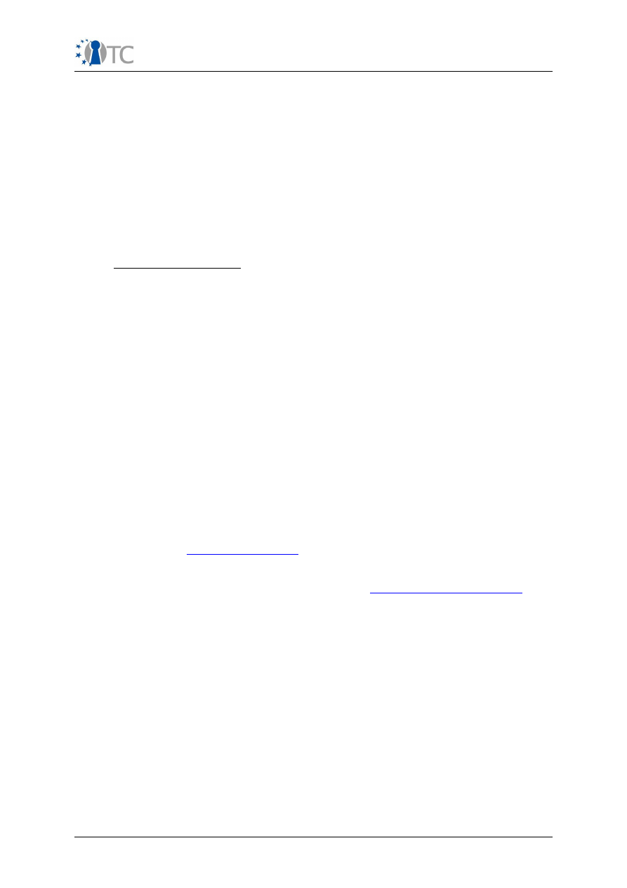
Publishable Activity Report OpenTC
●
Static analysis of OSLO
: The OSLO source code has been analysed with
Frama-C. This led to a dozen of alarms.
●
Static analysis of Xen
: TUS terminated their analysis of Xen 3.1 and
produced a synthetic report, where all bugs are classified into categories. The
partners CEA, BME and TUS have merged their bugs about Xen using the same
format and produced a common report.
●
Static analysis of Vgallium
(virtualized version of the Gallium graphics
driver for Xen 3) using Coverity Prevent, Frama-C and SCARE: this was not
planed initially. Over 800 potential bugs were discovered.
●
Testing of the Trousers TPM driver code:
this was not planed initially, but
was required by WP04 as Trousers is the only other alternative to the IFX TSS
and is fundamental to security. 16 security weaknesses were found.
2.6.2 Major Achievements
●
Successfully tested and corrected Linux version of the IFX TSS.
●
Analysed Xen 3.0.3 core with Coverity Prevent.
●
Analysed Xen 3.0.3 core main hypercalls with Frama-C.
●
C++ to C front-end prototype for the static analysis of C++ code.
●
Finalized security testing methodology.
●
Finalized operational security metrics.
●
Enhanced open AVIT (Applied Verification for Integrity and Trust)
methodology.
●
Two security and trust methodologies, one of them widely published.
●
A new static analysis tool, Frama-C.
●
A survey of the state of the art in the domains of static analysis tools, testing
tools and existing Linux kernel bugs.
●
Case studies on testing and analysis of selected OS code.
●
Research reports on difficult aspects: C++ code analysis, certification of OS
code, etc. (all)
The public web site
http://frama-c.cea.fr
has opened and provides all facilities related
to the toolkit and its support, including forums, knowledge bases, downloads, a bug
tracking system, user and developer documentation, etc. A Trust Analyst certification
process has been started and will be available at
http://www.trustanalyst.org
. The
completed OSSTMM methodology was published in the widely disseminated Third
Edition of “Hacking Exposed” for Linux.
2.7 WP 08: Trusted Computing for embedded controllers and
mobile phones
WP08 task was to investigate the use of Trusted Computing technologies and
virtualization on mobile and embedded devices. The major goals were to analyse
current standards in the mobile area, to develop and analyse appropriate use cases,
and to adapt work from other work packages to mobile scenarios.
In addition to analysing security requirements and TPM functionality specifically for
this class of devices, the main objectives of this work package were to demonstrate
an architecture for a trusted platform for an embedded processor based system for a
mobile phone. This included porting main elements from other work packages to
embedded hardware, to improve the system for the required security services and
performance, and to establish trust and security profiles for the system, the
operating system, and applications.
OpenTC Publishable Activity Report
26/40
Publishable Activity Report OpenTC
In summary, WP08 successfully reached all objectives. The following sections outline
the progress that was made throughout the project and the major achievements of
this work package.
2.7.1 Progress towards objectives
Definition of a minimum set of security requirements
for a mobile phone trust
prototype. WP08 performed an analysis of market and mobile standards
requirements with regard to all relevant stakeholders (device owners, device
manufacturers, content and service providers, network operators). The analysis of
applicable standards included the work of the Trusted Computing Group (TCG) and
the Open Mobile Terminal Platform Group (OMTP). In line with OpenTC's main focus
on platforms, the focus was on device security characteristics (as opposed to network
security).
Definition and analysis of use cases:
Based on the use case document of the
TCG Mobile Phone Working group, a number of primary use cases (for example,
protection of IMEI, SIM lock, and user data DRM, secure application download) were
investigated to determine the basic security characteristics. The analysis of derived
use cases revealed that a TCG based architecture can fulfil many, but not all security
requirements. While standard requirements such as integrity, authenticity and
confidentiality can be covered, open mobile devices such as suggested by the OMTP
require additional mechanisms for trusted boot-up and secure execution.
Definition of life cycle characteristics for trusted mobile devices:
WP08
investigated the security structures and techniques developed by the TCG and the
specifications from the TCG Mobile Working Group. Trust relationships and necessary
technological support were analysed and detailed for each point in the life cycle of
the device and hosted applications. The work package conceptualized how to use
TCG based techniques to support application installation, system boot, secure data
storage and end of life management.
Definition of trust and security profiles:
Based on the security analysis of OMTP
TR0 device characteristics, the L4 microkernel and the use cases chosen, WP06
determined the set of fundamental components that have to be embedded in order
to meet the security requirements identified in its prior investigation.
Contribution to standardization:
During the course of the project, the OpenTC
partners Comneon and Infineon participated in the continued specification activities
of the OMTP and contributed to the review of its new Advanced Trusted Environment
(TR1) that was produced during this time. Vice versa, the basic trust functions
selected by WP08 are largely aligned with this standard. RHUL participated in the
Software Defined Radio security working group, examining on how TC functionality
may be integrated in the SDR architecture, in particular with regard to secure
software download.
Design and development of prototypic demonstration application:
WP08 has
implemented a secure wallet application prototype on a PC platform, running in an
isolated compartment and protecting user secrets by a trusted storage subsystem.
Due to resource constraints, some use case-specific parts (which include a GUI, a
complete web browser and a Java virtual machine) could not been ported to a mobile
platform.
Porting micro-kernel based hypervisor to mobile platform
: The L4-Fiasco
architecture and the user space framework L4Env underlying the secure wallet was
ported to Infineon X-GOLD208 platform which is based on ARM926 core. The
implementation offers basic support for on-chip peripherals (interrupt controller,
timer, serial interface) and supports virtualized TPM functionality.
2.7.2 Major Achievements:
The major achievements of this work package are:
OpenTC Publishable Activity Report
27/40
Publishable Activity Report OpenTC
●
A thorough examination of the TCG and OMTP standards,
●
The security analysis of several use cases that are relevant for mobile
scenarios,
●
The development and analysis of the Secure Wallet use case as an example
scenario,
●
The port of basic microkernel-based operating system components from other
OpenTC work packages (in particular: the L4 microkernel, L4 environment,
L4Linux),
●
The port of the TPM emulator and its modification to use security features of
the mobile hardware.
The results of WP08 were communicated through numerous peer-reviewed and
invited papers, conferences, and workshops.
2.8 WP09: Distribution of Trusted Linux Platform and
Modules
The general objective of this work package is the distribution of the Platform and
Modules developed by OpenTC. More specifically, this includes the selection of SW
modules from project, packaging, support on quality assurance, marketing, and
general developer support for Linux related questions and problems. Contrary to
other work packages, it is represented by a single project partner, namely
SuSE/Novell.
2.8.1 Progress towards Objectives
SuSE's contribution was somewhat hampered during the first year of the project due
to OpenTC's initial focus on minimal Linux distributions and its need to rapidly adopt
an existing development environment. With the production of the first CD release,
however, the participants realized that the maintenance of future distributions would
become unmanageable without an automated build system.
From that time on, SuSE guided the developers towards adopting OpenSuSE as
development and target system. Not least, this concerned workflow organization and
configuration steps that have to be followed in order to make software packages of
developed components digestible for the build process.
All deliverables of this work package were moved into the second and third reporting
period. As a preparatory step, SuSE had started to include the Xen hypervisor in one
of their standard distributions, starting with a re-mastered version of OpenSuSE
10.1. The adoption of Xen as an integral part of the distribution still required
considerable effort, but the integration had reached a stable state when OpenTC
started to port their components to OpenSuSE 10.3 in 2007.
In parallel, SuSE created an infrastructure for the management of the software build
process, revision control, configuration management, storage and the dissemination
of RPM packages that are compiled and packaged on a dedicated build farm. This
infrastructure, which can also be used for more general purposes, provides a
framework to generate any gusto of a Linux distribution using the infrastructure and
tools by the distributor.
In the General Assembly in September 2007 POLITO was formally appointed by
OpenTC consortium for leading the activities for the next Proof of Concept (PoC)
prototypes within WP09 and under the overall supervision by SuSE as WP leader.
From M25 onward, POLITO's activities related to the PoCs were performed in the
context of and accounted against WP09.
The work performed by POLITO for the Proof of Concept (PoC) prototype for the
scenario “Corporate Computing at Home” (CC@H) during M25-M42 concerns the
general coordination, development, integration and test tasks of the distribution,
OpenTC Publishable Activity Report
28/40
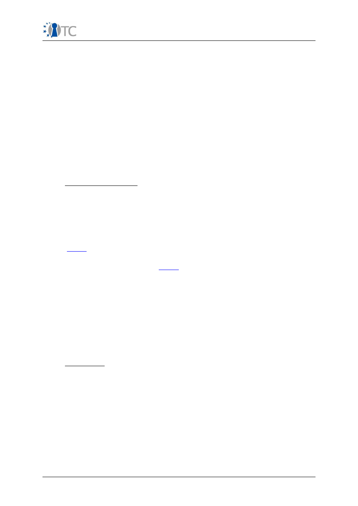
Publishable Activity Report OpenTC
production of documentation and of test instructions, and determining the actual
date for the release. For the “Virtualized Data Center” PoC, it also included the co-
design of the scenario, roles and components, the co-definition of the TVD policies,
enhancements of previous components, restructuring tasks, integration and tests.
During the reporting period, POLITO and SuSE supported three cycles of adapting
OpenTC components to new versions of OpenSuSE (10.3, 11.0. 11.1). In some cases,
these adaptations were quite tedious and consumed considerable effort. They were
unavoidable, though critical components of the OpenTC framework had to be
implemented as loadable modules which depend on low-level mechanisms and
interfaces of the Linux kernel. These can change between subsequent releases, and,
in fact, they did.
SuSE acted as advisor for partners with little experience with OSS licenses who
started Open Source Software review processes for the release of their software
under a FOSS license. In some cases, intellectual property constraints for OpenTC
software packages not yet released under a free license demanded to separate them
from the publicly accessible OpenSUSE package repository. The build system proved
to be flexible enough to address this requirement.
2.8.2 Major Achievements
●
Infrastructure for configuration management, package building, and bug
tracking private to the project
●
Packaging of RPM packages of Trusted Computing and virtualization
components
●
Integration of the SUSE version/port of the PET 2006 PoC prototype
●
Professional development platform to implement the 2007 PoC prototype
(
CC@H
), including bugfixing of components relevant to the Trusted
Computing and virtualization functions used by OpenTC
●
Packaging and distribution of
CC@H
prototype
●
Packaging and distribution of Virtual Datacenter prototype
●
Support of three porting cycles of the OpenTC platform
●
Dissemination and publication of all prototype, along with documentation and
guidance. The directory is mirrored on ftp servers worldwide
●
As of April 2009, all software components necessary to operate a TPM are
included and integrated in OpenSuSE
●
Support in licensing questions and in quality assurance
2.9 WP10: Dissemination, Exploitation and Training
2.9.1 Objectives
The fundamental objective of WP10 was to disseminate the trusted computing
concepts and the corresponding hardware, software and applications that have been
developed within the project. In order to maximise the benefit for the project
partners and stakeholders the following measures were taken.
●
Close co-operation with standardisation bodies - such as, the TCG, MPEG, Java
and OMTP standardisation bodies - to provide input to and influence (new)
standards (SWP10a).
●
Dissemination of the main project results through various channels such as
conferences and trade shows, articles in technical and academic publications
and technical workshops (SWP10b).
●
Development of training concepts and material to ensure knowledge and
innovation transfer (SWP10c).
OpenTC Publishable Activity Report
29/40
Publishable Activity Report OpenTC
●
Development and implementation of an exploitation plan at a consortium and
partner level (SWP10d).
The general goal of all these activities is maximize the benefit of participants, project
stakeholders and the impact of the project on trusted computing and ICT in general
on the basis of an informed dialogue about the benefits and drawbacks of TC, and
the OpenTC approach in particular (including its applications such as DRM) with
stakeholders, different user groups, and citizens.
2.9.2 Progress Towards Objectives
SWP 10a: Standardisation Activities Including TCG Liaison
A relationship with the TCG has been established, and involved direct and continuous
interaction through various active OTC industry members who have a prominent role
within the TCG; for example, HP, IBM, IFX and AMD are members of the TCG board of
directors and are also project partners. The TCG, however, imposes very strong non-
disclosure and non-patent agreements on its members to prevent any economic and
structural restrictions on the exploitation of patents or intellectual property (IP) by
organisations which have access to current standardisation work. The TCG is
attempting, however, to bring its own non-free IP into the standard and to apply for IP
rights (like patents) on the TCG working group results. To give governments,
universities and other research institutes the chance to participate and influence the
TCG standardisation work, the TCG liaison group was created. In this way
organisations can participate without paying any membership fees (but receive no
voting rights). Currently POLITO, IAIK and RHUL are members of the TCG liaison
group. Both means of TCG interaction (via OTC partners/TCG members and the
liaison program) is believed to have been effective.
To verify the compliance and conformance of product implementations to the TCG
standards, the TCG has created a special compliance verification project. Some
OpenTC members (for example, members of WP07) have participated actively in this
project. To make such compliance test scenarios and test suites available to the
public, OpenTC partners have prepared the ''VerifyTC'' proposal for the 2
nd
call of
FP7, which made test scenarios and the results of testing the conformance and
compliance of new products available to the public; this has enabled unbiased
reports detailing the strengths and weaknesses of TC implementations to be
delivered.
The development of the new TPM software stack (TSS) standard version 1.2 within
the TCG was completed in parallel to the development of the OpenTC TSS in SWP03b
by IFX. This parallel implementation enabled the developers from WP03 to provide
the TCG TSS WG with valuable input regarding their experience. The implemented
result was then tested within WP07 and feedback delivered. This new TSS stack from
OpenTC WP03 was released at the same time as the TCG published the respective
standard.
LVD have participated in several MPEG meetings to support the development of the
ISO/IEC 23000-7 Open Access Application Format and the MPEG-21 REL (Rights
Expression Language). Technical work on the two standards within the MPEG Group
has now been completed. Currently the standards are under final ballot and some
editorial improvements have been made. The reference software for both standards
has also been completed. An implementation of the Open Access Application Format
has been published and reference software for MPEG-21 REL is available on the
MPEG-21 reference software site. Standardisation of the reference software is in
progress. An amendment of both standards has been initiated to include a
description of the software and its conformance to the standards. The current status
of the documents is “Final Committee Draft”. Finalisation of these documents within
the MPEG group has been planned for October 2008.
The proposal for *“JSR 321: Trusted Computing API for Java"*, submitted by IAIK to
the Java Community Process in late 2007, has been reviewed and voted on by the
OpenTC Publishable Activity Report
30/40
Publishable Activity Report OpenTC
J2SE Executive Committee, receiving overwhelming support with 15 out of 16 votes
in favour (one abstention). Following this, an Expert Group was formed. IAIK is now
leading this group of international experts from academia and industry. In the spirit
of the OpenTC project, this Java Specification Request No. 321 (JSR321) has chosen
an open, transparent and agile working style. Thus, technical discussion is open to
non-members of the JCP, allowing for further co-operation and integration with the
open source community. At the time of writing, IAIK is in contact with experts from,
but not restricted to:
●
Sun (J2SE Security Architect), USA;
●
Intel, USA;
●
University of Klagenfurt, Austria;
●
University of Cambridge, UK (Open-TC partner);
●
Portakal, Turkey (Open-TC partner); and
●
CSAIL, Massachusetts Institute of Technology, USA.
The public website of JSR 321 is available at https://jsr321.dev.java.net/. Workshops
with in-person meetings have also been held.
RUB and HP have participated in the development of a Common Criteria protection
profile for high assurance security kernels (HASK-PP), together with Sirrix AG, Atsec
Information Security, and the German Federal Office for Information Security (BSI).
Input from OpenTC was considered during the requirement definition phase of this
protection profile's development. A scientific paper which describes this work was
published at TRUST 2009 (M42).
WP08 (mainly TUD, IFX, COM and RHUL) has analysed and worked on related trusted
mobile phone standardisation with both TCG and non-TCG standards groups. For
example, RHUL worked with members of the TCG MPWG, and IFX has been heavily
involved in the security work of the Open Mobile Terminal Platform (OMTP). OMTP is
an operator sponsored forum which aims to serve all stakeholders in the mobile
phone value chain by gathering and driving requirements. The requirements are
technology platform neutral, and aim to promote the adoption of new services across
a range of platforms. OMTP is currently working on an extension of the TR0 Basic
Trusted Environment, i.e. to produce the Advanced Trusted Environment (TR1). TR1
has defined recommendations for security enablers such as secure storage and
trusted execution environments. IFX took part in this standardisation work. This
included teleconferences, face to face meetings, and specification review work. By
doing this, we ensured that WP8 work took the latest requirements into account as
soon as they were available.
SWP 10b: Dissemination of Project Results
Over the course of the OTC project, all partners have been actively involved in raising
public awareness on TC and in presenting the work completed by the OpenTC. A new
version of the OpenTC website was constructed by TEC. It was created using the
content management system Joomla and provides a number of new features (e.g.
Forum, Online Newsletter registration, Newsletter archive, Download Area). Here we
have made more OpenTC documents (deliverables, research papers, other
publications) available online. TEC also installed the Subversion System for the Build
Server at SuSE Nürnberg, which is used to contain the public version of the OpenTC
proof-of-concept prototype.
The OpenTC newsletter editor, ITAS, has overseen the completion of seven issues
(June 2007, October 2007, January 2008, February 2008, March 2008, June 2008 and
April 2009) with help from various partners for contributions, corrections and proof-
reading. A facility for providing feedback to the consortium has been implemented
together with Technikon. Interested individuals may now provide feedback using a
link in the newsletter or directly though the website. A small number of feedback
OpenTC Publishable Activity Report
31/40

Publishable Activity Report OpenTC
messages have been obtained and answered.
To fulfil the defined objectives the project has also co-operated with external bodies
and organisations and participated in public, scientific and educational events. This
includes participation in events such as the Second Workshop on Advances in Trusted
Computing (December 2006, Tokyo, Japan), the IEEE Consumer Communications and
Networking Conference CCNC 2007 Conference (January 2007, Nevada, USA), the
Workshop on Trusted Computing from a European Perspective (February 2007, Bonn,
Germany), the CeBIT Industrial Conference (March 2007, Hanover, Germany), the
2007 Information Security Summer School (August 2007, Taipei, Taiwan),
Foundations of Security Analysis and Design 2007 (September 2007, Bertinoro, Italy),
the Trustworthy Global Computing 2007 (November 2007, Sophia-Antipolis, France),
Axmedis 2007 (November 2007, Barcelona, Spain), FOSDEM 2008 (February 2008,
Brussels, Belgium), TRUST 2008 (March 2008, Villach, Austria), EUROSEC 2008
(March 2008, Glasgow, UK), WSES 2008 (May 2008, Lyon, France), ETISS 2008
(September 2008, Oxford, UK) and Trust 2009 (April 2009, Oxford, UK). All project
partners have also actively contributed to academic papers/journals, newspapers,
books, magazines. Numerous articles have been published in magazines and
journals, such as an invited paper at the 5
th
SDR Technical Conference (November
2006, Orlando, USA), UbiSafe 2007 (May 2007, Ontario, Canada), an invited paper at
FOSAD 2007 (September 2007, Bertinoro, Italy), IEEE Security and Privacy (M37/38)
and Cryptologia (to appear 2009). Contributions to books have also been made – see,
for example, an invited book chapter in Crimeware (April 2008, Addison-Wesley). A
full list of dissemination activity is available in D10.3 – Intermediate Dissemination
Activities Report and Dissemination Plan (M18) and D10.9 Final Dissemination
Activities Report and Dissemination Plan (M40).
The most prominent dissemination event held during 2008 was TRUST 2008,
organised by Technikon. Trust 2008 was an international event, which took place in
Villach, Austria in March 2008 and brought together scientific stakeholders from all
over the world in the field of trusted computing. The conference focused on trusted
computing and trust in IT, and saw the presentation of both state of the art
technologies and forward looking research papers. The main module, i.e. the
scientific conference, served to maximise communication and knowledge exchange
between international parties from both the scientific/research community and
industry.
During Trust 2008, several project meetings and workshops took place. In the foreground was the
OpenTC meeting, at which almost all partners were represented. The research papers presented
during the scientific module at the conference (which are highly relevant to the work being
completed within OpenTC) were published by Springer Verlag in LNCS 4968. Feedback indicated
that the international audience from both industry and science was pleased by the mix of
conference articles, project presentations and discussions. In total 159 participants (made up of
people of 18 different nationalities from 4 continents) registered for Trust 2008.
A demonstration of the OpenTC PET (Private Electronic Transactions) proof-of-
concept prototype was given by RHUL at the annual HP Information Security
Colloquium hosted by RHUL in December 2006. This demonstration was organised in
coordination with the OpenTC demo group (HP Labs Bristol, POLITO). It furthered the
testing of the OpenTC prototype and involved developing early documentation for
the OpenTC prototype, in particular those concerning troubleshooting. A poster for
the OpenTC prototype was also created and its content used during the OpenTC
review meeting.
A demonstration of the OpenTC CC@H (corporate computing at home) proof-of-
concept prototype was given at the annual HP Information Security Colloquium
hosted by RHUL in December 2007. This demonstration was organised in co-
ordination with the OpenTC demo group (HP Labs Bristol, POLITO). A poster for the
OpenTC prototype was also created and presented at TRUST 2008, the HP
Information Security Colloquium hosted by RHUL in December 2008.
OpenTC Publishable Activity Report
32/40

Publishable Activity Report OpenTC
SWP 10c: Training
As university courses on trusted computing are still rare, OpenTC academic partners
have initiated and are continuing their academic training. RHUL and IAIK have
graduate level courses devoted to many aspects of trusted computing, whereas TUB
is contributing to an undergraduate course in security in which trusted computing is
also covered.
A full 11-week course on trusted computing (comprising of 11 3-hour lectures) was
initiated in January 2007 and has been delivered since then as part of the Masters in
Information Security at RHUL. This included 2 guest lectures given by Graeme
Proudler from HP Labs Bristol and Steve Hand from the University of Cambridge in
2007 and Graeme Proudler and Chris Dalton from HP Labs Bristol in 2008 and 2009.
Two pieces of coursework and an examination were also written. The OpenTC proof-
of-concept prototype was presented during a lab session in 2009.
More recently, RHUL has also seen the introduction of a new ‘security-focused’
undergraduate degree in computer science. As part of this undergraduate degree
program a course in trusted computing will be offered in 2009/10, again building
directly on the dissemination materials developed within the OpenTC project.
IAIK started giving a course entitled “Selected topics of IT-security: Trusted
Computing” in March 2007, with about 30 registered students. In this course, besides
teaching the theory of trusted computing in a conventional way, students also use
TPM-emulators and components developed within OpenTC for practical exercises.
This course has continued through 2008 and 2009. In 2008 students on this course
were given the opportunity to visit the educational event at Trust 2008, as well as
the scientific conference, and the task to write papers on selected topics of trusted
computing for presentation. An extended guest lecture from David Grawrock (Intel) is
planned for May 2009.
In 2006 TUB started giving a lecture entitled “New Technologies in Security” focusing
on trusted computing at the Computer Engineering Department, University of Kocaeli
(Turkey). 5 weeks of this course are dedicated to trusted computing technologies.
This course also continues.
The course "Project Risk Management" was held in Halmstadt, Sweden at project
start in November 2006 with 30 engineering students. One goal was to introduce the
students at Halmstadt to the OpenTC project. The students were ask to chart up,
identify and evaluate potential risks connected with trusted computing. Thereafter,
as second goal of deeper understanding the technology, the students were divided
into groups of 4-5 people for an OpenTC case study. The student had to choose the
identity of one of the following four groups: (a) Governmental Agency, (b) Private
Person, (c) SME (Small and Medium Enterprise) or (d) Industry, and they had to look
for the potential influence of trusted computing on their chosen identity. The case
study questions were (a) Find the expected impact on the identity chosen, (b)
Describe the IT fields in the sector which might be most influenced by trusted
computing, and (c) Identify the major risks issued or covered by trusted computing
Technology for their identity. For the five highest risks they were asked to derive
mitigation plans and to draw a contributing factor diagram (CFD) for security issues
and to make trusted computing the chart destination.
In addition OpenTC partners worked in co-operation to realise the 2
nd
European
Summer school on Trusted Computing (see http://www.etiss.org/ for details) and also
presented their results in other training settings during summer 2007. HP extended
the PET Demo as a tool for training sessions at the summer school and also prepared
material for training (i.e. Asia-Pacific Summer School). POL prepared two documents
describing their work on the Demonstrator Prototype, i.e the test sequence for the
PET Demo and a lab exercise manual for a “Trusted Virtualisation Lab”. Both
documents were used in the summer school. IAIK held workshops at the summer
school and made contact with several outside organisations, already making use of
OpenTC deliverables. The feedback gained will certainly contribute to future
OpenTC Publishable Activity Report
33/40

Publishable Activity Report OpenTC
semesters of their course. OTC were also visible in the 3
rd
European Summer school
on Trusted Computing where once again where HP gave a presentation on
virtualisation, POL mediated a practical workshop and RHUL gave a presentation on
mobile trusted platforms.
In addition to academic partners, commercial partners are also trying to support
thesis work relating to trusted computing. One MSc student from Middle East
Technical University, Institute of Applied Mathematics is now an unpaid graduate
intern at PORT. One MSc and one PhD student from Fatih University, Dept. of
Computer Engineering has made use of OpenTC infrastructure on realising trusted
authentication, authorisation and auditing for an experimental voice over IP (VoIP)
system. One team of three senior students from Atılım University, Dept. of Computer
Engineering has developed a secure e-commerce protocol that works on public
Internet. Many students from Bilkent University, Dept. of Computer Technology and
Programming have also used OpenTC deliverables for their graduation projects.
A series of seminars have also been presented by various partners. For example, IAIK
participated in the Educational Event at Trust 2008 (March 2008, Villach, Austria)
presenting two classes on “How Trusted Systems are Programmed: A Practical View”
and “ Mobile Trusted Computing”. RHUL also presented a session entitled “Who is
the TCG and what are the TC concepts?” at TRUST2008. TUB presented a tutorial
entitled “Trusted Virtualization and Grid Security” at CCGrid 2008 (May 2008, Lyon,
France).
SWP 10d: Exploitation
The objective of SWP10d was to develop strategies for creating revenue from the
project results. Specific goals were to:
●
promote rapid technology implementation and transfer;
●
maximize the benefit for the project participants; and
●
establish a European approach for trusted computing.
In cooperation with other OpenTC work packages, all goals were achieved. For the
duration of the project, WP10d has worked on the basis of a continually refined
exploitation plan, which was supported by a market study and a patent study
performed by WP02. During this time, WP10d has made substantial progress towards
its objectives.
●
In order to enable rapid technology implementation and transfer, WP10d has,
from the outset, encouraged and guided an incremental development process
geared towards producing conceptual prototypes that address real-world
scenarios. This approach has proven to be successful far beyond our
expectation. The proof-of-concept prototypes served as intermediate
milestones whose results could be demonstrated both internally and
externally. In particular for CUCL and HP Laboratories, it allowed us to
convincingly showcase OpenTC results to product divisions as early as mid-
2007.
●
Work on OpenTC was instrumental in establishing open source based
hypervisors as serious alternatives to proprietary solutions for HP's future
commercial products, something that would have been very hard to achieve
without the preparatory groundwork HP Labs has performed in the context of
this project. Product divisions in HP and Citrix have since performed their own
studies on commercialising trusted virtualised client platforms, which are
currently evolving into concrete product roadmaps.
●
As a major contribution to accelerate technology implementation and transfer,
WP10d and WP09 jointly developed and put in practice a concept to
streamline the build process of software components developed by the
project. OpenTC components are now provided through an industry-strength
configuration and distribution management system. The final OpenTC
OpenTC Publishable Activity Report
34/40

Publishable Activity Report OpenTC
distribution as well future ones are delivered through the OpenSuSE build
environment, following a defined workflow for package creation, management,
and deployment. The process is highly automated, which maximizes the
chances of future maintainability even with limited human resources.
●
WP10d located several exploitation opportunities and was, in many cases, able
to facilitate the adoption of OpenTC results by industrial partners. Future
versions of the OpenSuSE build service will benefit from the experiences
gained throughout the project. Components and concepts developed during
the projects have been or are in the process of being adopted by HP, IBM,
SuSE/Novell and CUCL/Citrix. Examples include network virtualisation
technology, software components to support security enhanced graphical user
interfaces, and approaches to reduce the set of privileges necessary for
management domains.
●
The OpenTC study on existing intellectual property has since been made
available to the TCG upon their request. A comparative analysis of TPMs from
different vendors performed by OpenTC partner RUB has substantially
contributed to the TCG debate on interoperability and certification of trusted
computing components. This discussion has resulted in the creation of a new
TCG certification program that was announced in April 2009. As a cooperative
activity between the German BSI, Sirrix AG, and OpenTC partners launched in
2007, a Protection Profile for High Assurance Kernels was produced. The final
version (HASK_PP v1.14) was published in June 2008.
●
To further OpenTC's exploitation for education and research purposes, WP10d
has, in cooperation with other WP10 partners, initiated and supported the
extension of the intermediate 'Corporate Computing at Home' scenario into a
platform that has become an integral part of academic and professional
education on trusted computing. In conjunction with the material developed
for presentations, conferences, courses, and summer schools, this line of
exploitation was and is instrumental for generating and broadening the
expertise on trusted computing technology in Europe.
●
Results of both academic and commercial interest concern the improvement
of test and validation tools, in particular in the area of static code analysis.
OpenTC's work on low-level aspects of hypervisors have spawned research
activities on new, capability based microkernel hypervisors RUB) and
advanced methods for I/O sharing and multiplexing (HP). Experiences from
testing the Xen hypervisors have contributed to a paradigmatic shift towards
language based security: the next generation of management tools for Xen
will be developed in Objective Caml, which enables simplified and improved
static code analysis of the implementation.
●
The hypervisor core engines and the trusted computing stacks to extensive
testing. The natural way of exploiting this activity was to communicate test
results to the respective software developers. This has resulted in numerous
bug fixes and patches, improving the overall software quality and security
characteristics of the software and creating community benefits for developers
of open source software.
●
In cooperation with WP01, WP10d has ensured that project results are
exploitable by overseeing the release of all results under open source licenses.
As it stands, all relevant components of the architecture can freely be
distributed and used by developers outside the project.
WP10d has initiated and facilitated a number of follow-up activities. They concern a
new research initiative on Trusted Virtual Client Management in HP Labs, the
application of OpenTC results to cloud-scenarios through a cooperation with the EC
funded RESERVOIR project, and the future maintenance of the OpenTC Platform for
Training and Education.
OpenTC Publishable Activity Report
35/40
Publishable Activity Report OpenTC
Follow-up activities that are currently in the planning stage concern the application
and extension of the Open Source Testing Methodology developed in OpenTC and
workflows to create information on the trustworthiness and security attributes of
software. OpenTC partners HPLB, SuSE and ISECOM are investigating options to
combine existing metadata repositories and automated testing processes to
generate trust and security related metadata on packages that are integral part of a
trusted computing base for hypervisors. This line of research might be pursued in the
context of a future EC funded project.
2.9.3 Major Achievements
Standardization:
Through its partners, OpenTC maintained and extended its
relationship with standardization bodies (i.e. 3GPP, OMA, MPEG, JAVA Community and
the TCG) via direct and continuous interactions. TCG members that are also project
partners (i.e. HP, IBM, IFX, AMD) regularly input project results to standardization
bodies' workgroups and stayed in touch with the latest developments. Work the TSS
directly influenced the TCG TSS work group and led to the implementation of the new
TSS API specification with the Infineon TSS Stack that was released by the OpenTC
project. Work a Java API for Trusted Computing resulted in the successful approval of
the JSR 321 (Java Standardisation Request) which since released its first draft for
public review. This activity will continue under the leadership of OpenTC partner IAIK.
LDV has continued its contribution to the Open Release MAF (MPEG Application
Format) to the MPEG-A Standard and submitted reference implementations for the
Open Access Application Format and the REL OAC profile (license interpreter and
license creator). POL contributed TCG results to the field of signing applications and
worked within the corresponding national body in Italy (UNI/UNINFO). Infineon and
Comneon contributed actively to the Open Mobile Association (OMA) standards,
provided feedback on implementation experience and results from the Open_TC
project, and contributed to the review of the OMTP Advanced Trusted Environment
(TR1) specification.
Dissemination:
The dissemination of results was continuously increased between
reporting periods. First, conservative estimates suggest that OpenTC partners have
contributed to around 45 international and 15 national presentation and talks, 60
international conferences, around 90 international and 5 national publications, as
well as publicly delivering 9 national and 22 international courses during the lifetime
of the project. OpenTC was internationally present at numerous events all around the
world, ranging from New Zealand and East Asia (e.g., Japan, Malaysia, China) to the
Americas. Extended versions of the proof-of-concept prototypes served as hands-on
training systems in multiple summer schools and educational events, and the project
partners disseminated results in approximately 50 national and European projects.
OpenTC has maintained its own website, produced a regular newsletter, and
distributed its technical results through the infrastructure of SuSE with worldwide
mirrors. We take particular pride in having helped to lay the foundations for
establishing a new, annual scientific conference (TRUST) which first took place in
Villach/Austria (2008) under the auspices of and organized by project partners. In
retrospect, OpenTC was instrumental for fostering an evolving, international
academic and industrial research ecosystem for trust in IT in its early beginnings,
which has since been successfully established.
Training and education:
OpenTC has delivered more than 35 complete courses on
Trusted Computing and the Open_TC approach. Most of the extensive amount of
information and lecture slides were all made publicly available on the Open_TC
partner's website and were released under the Creative Commons license, akin to
the FOSS licenses used in other parts of the project. Lectures were given e.g. at the
Information Security Summer School (ISSS' 07) in Taiwan, at the Foundations of
Security Analysis and Design (FOSAD 2007) in Italy by RHUL, at the Asia Pacific
Trusted Infrastructure Summer Schools (APTISS) in Zhuhai (2007, China) and Pulau
Pinang (2008, Malaysia) as well as in practical labs at the second ETISS summer
school and the TRUST2009 conference in Bochum (2007, 2008, Germany). Seminars
OpenTC Publishable Activity Report
36/40

Publishable Activity Report OpenTC
on Trusted Computing were made part of the curriculum of academic partners such
as RHUL and IAIK (University Graz).
Exploitation:
HP Labs, IBM Labs, and SuSE have each introduced results of OpenTC
to product divisions of their companies and raised considerable interest. An analysis
of the current market for trusted computing and virtualization technology was
combined with the final version of the exploitation plan in November 2008. OpenTC
collaborated in the production of CC EAL5 Protection Profile for High Assurance
Security Kernel (HASK-PP). The IPR study initiated by OpenTC was made available to
the Trusted Computing in support of the ISO standardization of the TCG
specifications. Many of the standardization efforts mentioned above will be continued
by the individual partners beyond the conclusion of the project.
Considerations for dissemination and exploitation of OpenTC's results have directly
influenced the following aspects
●
Final OpenTC distribution:
The work package facilitated the decision to base
the OpenTC distribution on the latest official OpenSuSE distribution available
to the project. While considerable effort had to be spent on porting the
architecture recent 11.1 version, this was deemed to maximize the chances of
adopting the project result results.
●
Future maintainability of OpenTC distribution
: In cooperation with WP09, the
work package drove the difficult decision to base the integration and
packaging of all OpenTC components on the industry grade OpenSuSE build
and release system. As a result, the complete OpenTC distribution – as well as
streamlined distributions and compartments for dedicated purposes – can now
be produced from scratch in an automated process that covers patching,
compilation and imaging.
During M36 to M42, OpenTC partners have started to execute the exploitation plan.
Our main focus is currently directed at a dedicated OpenTC distribution based on
OpenSuSE based on the most recent stable OpenSuSE distribution available to the
project. Further efforts concern the Xen hypervisor, where features of service
decomposition and results of OpenTC's work on secure graphical interfaces will be
included in future releases. Core concepts of Trusted Virtualized Clients as developed
by the project were communicated to HP product divisions and are subject to a
product study. IBM plans to include concepts from OpenTC in future architectures for
managing virtualized nodes and networks. Future versions of SuSE's enterprise
server as well as the corresponding Desktop product will come with enhanced TC
support with additional software packages based on OpenTC components. This
includes the vNET VPN routing package, the
libvirt
package for TVD instrumentation
of Xen virtual domains, and TPM support for x509 frameworks with the openssl
package set. Based on OpenTC's experiences with building dedicated distributions
and virtual images, SuSE is in the process of releasing an automated build service
with simplified interface to end users.
OpenTC Publishable Activity Report
37/40
Publishable Activity Report OpenTC
3 Dissemination and Use (“Publishable Results”)
To enable maximum community benefit, the project results were integrated into, and
distributed as, Open Source software, supporting Linux in particular. A main objective
was the development of complete trusted Linux kernels for different use classes,
which will be distributed as part of the Novell/SUSE (a project member) Linux
distribution package. By making the project results widely available, the OpenTC
consortium expects to encourage Europe’s IT industry to invest in trust and security
development. Especially small and medium-sized enterprises, industry, and research
institutions will be enabled to develop and market trusted computing systems and
applications independently. The integration of trust and security into next-generation
European products will make these more competitive on the world market.
An important result achieved during the second period of the project was the
publication of its first prototype for Privacy Enhanced Transactions (PET). It was
released as proof-of-concept because it was an intermediate step towards a more
comprehensive solution, did not contain all components of the architecture and
included components that were not in a finalised form. With a few minor exceptions,
the source code was released under the GNU GPL version 2 license and provided as
both a Live CD (binaries) and source code. It was tested on HP and IBM laptops
equipped with Trusted Platform Modules (TPMs) and distributed with a disclaimer of
responsibility.
In 2008 the second proof-of-concept prototype, the CC@HOME (Corporate Computing
at Home) was developed. (it could also have been termed “Private Computing on
Corporate Platforms”.) It reflects the situation where employers tolerate, within
reasonable limits, the utilization of corporate equipment (in particular notebooks) for
private purposes. However, while conniving in the private use of their equipment,
employers still want a safeguard that their machinery remains fit for being used on
their corporate network. The prototype was capable of hosting both proprietary and
non proprietary operating systems and came with a much improved graphical user
interface that allowed simplified switching between compartments and roles. It was
produced using SuSE's build environment and and disseminated under GPLv2
through SuSE's repositories that are mirrored worldwide. The prototype raised
considerable interest in product divisons of industrial partners. An extended version
has been used extensively as hands-on training system for Trusted Computing
technology since 2007.
The third proof-of-concept prototype addresses a virtual datacenter scenario and will
be released as dedicated OpenSuSE 11.1 distribution under GPLv2 in 2009. The
system allows to create and manage mutually isolated “Trusted Virtual Domains”,
that is, clusters of virtual machines residing on arbitrary nodes of a managed
infrastructure. The architecture provides for sophisticated logical isolation of data
and management traffic. It includes platform components for network separation,
tools for managing physical and virtual components, and a console implementation
allowing to map Trusted Virtual domains to dedicated management compartments
hosting the administrative frontends. OpenTC results will also be included as
improvements in upstream packages and will thereby become part of future
distributions of Linux and Xen. Like the second proof-of-concept prototype, the third
one will be extended and maintained as training system for academic and industrial
use.
In addition to the proof-of-concept prototypes, all of OpenTC's documentation and
courseware have been made publicly available under the Creative Commons license.
Further details and publishable results can be found in the OpenTC webpage
(
www.opentc.net
) in the Publications and download sections. Furthermore all
released Newsletters can be read on the OpenTC webpage. This service was
designed to inform the interested public about downloadable prototypes, project
achievements and other up-to-date information, and it is meant to support discussion
about the underlying issues.
OpenTC Publishable Activity Report
38/40
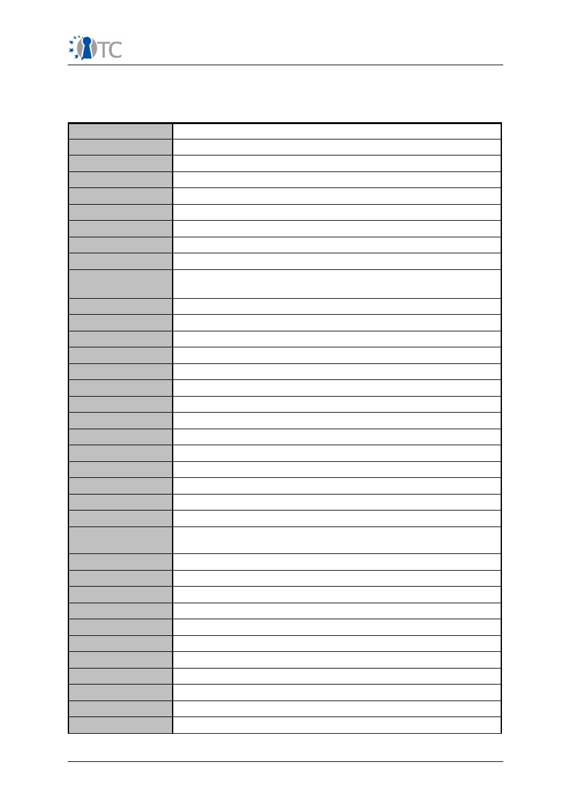
Publishable Activity Report OpenTC
4 List of Abbreviations
The following abbreviations may have appeared in this document
AMD
Advanced Micro Devices
API
Application Programming Interface
BME
Budapest University of Technology and Economics
CC
Common Criteria
CEA
Commissariat à l’Energie Atomique-LIST
CIM
Common Information Model
COM2
Comneon GmbH
CPU
Central Processing Unit
CUCL
University of Cambridge Computer Laboratory
DMTF-CIM
Distributed management Task Force – Common Information
Model
EAL
Evaluation Assurance Level
GUI
Graphical User Interface
HP
Hewlett-Packard Ltd
HTTP
Hypertext Transfer Protocol
HVM
Hardware Virtual Machine Monitor
IAIK
Graz University of Technology
IBM
IBM Research GmbH
IFX
Infineon Technologies AG
IMEI
International Mobile Equipment Identifier
INTEK
Intek
IP
Internet Protocol or Intellectual Property
ISE
Institute for Security and Open Methodologies
ITAS
Forschungszentrum Karlsruhe GmbH
KUL
Katholieke Universiteit Leuven
LDV
Lehrstuhl für Datenverarbeitung, Technische Universität
München
MPWG
(TCG) Mobile Phone Working Group
MSR
Machine Specific Register
ODBC
Open Database Connectivity
OMA
Open Mobile Alliance
OMTP
Open Mobile Terminal Platform
OS
Operating System
PC
Personal Computer
PCR
Platform Configuration Register
PIN
Personal Identification Number
PKCS
Public Key Cryptography Standards
POL
Politecnico di Torino
OpenTC Publishable Activity Report
39/40
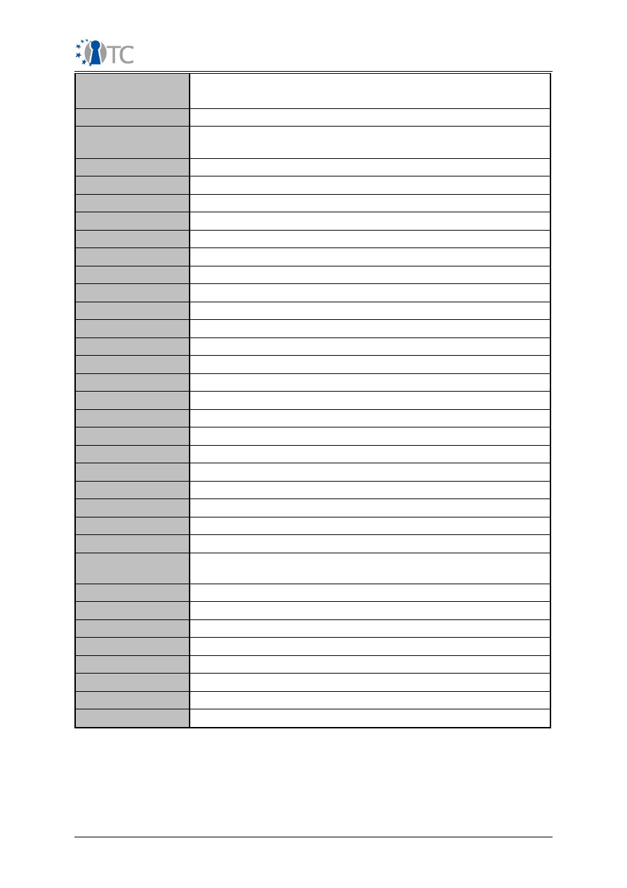
Publishable Activity Report OpenTC
PORT
Portakal Teknoloji Egitim Danismanlik Yazilim Turizm Taahhut
RHUL
Royal Holloway and Bedford New College
RUB
Horst Goertz Institute for IT Security, Ruhr-University Bochum
SDK
Software Development Kit
SKINIT
Secure Kernel Initialization
SOAP
Simple Object Access Protocol
SSH
Secure Shell
SSL
Secure Sockets Layer
SUSE
SUSE Linux Products GmbH
SVM
Secure Virtual Machine technology by AMD
SW
Software
SWP
Sub-Workpackage
TC
Trusted Computing
TCB
Trusted Computing Base
TCG
Trusted Computing Group
TCS
TCG Core Service
TCSI
TCG-Interface
TDDL
TCG-Device Driver Library
TDDLI
TDDL-Interface
TEC
Technikon Forschungs- und Planungsgesellschaft mbH
TPA
Trusted Platform Agent
TPM
Trusted Platform Module
TSPI
TSP-Interface
TSS
Trusted Software Stack
TSS-SDK
TSS-Software-Development-Kit
TUB
TUBITAK, National Research Institute of Electronics &
Cryptology
TUD
Technische Universität Dresden
TUS
Technical University of Sofia
VM
Virtual Machine
VMM
Virtual Machine Monitor also known as hypervisor
WP
Workpackage
WYSIWYG
What You See Is What You Get
WYSIWYS
What You See IS What You Sign
XML
Extensible Markup Language
OpenTC Publishable Activity Report
40/40
Document Outline